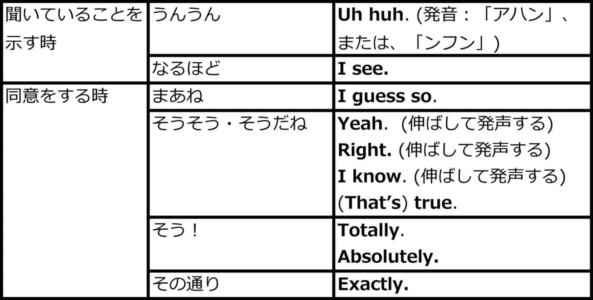
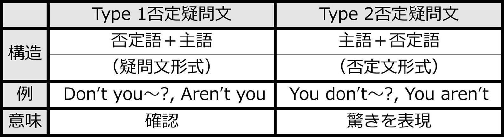

| ネイティブに笑われないクールイングリッシュ ―日本人の9割はダサい英語を話している (impress QuickBooks) | |
| サマー・レイン | |
| 株式会社インプレス (2016) | |
Introduction
私は高校を卒業後、大学で勉強するために日本に来ました。
ほどなくして英語教師のアルバイトを始めたのが、日本で英語を教えることになったきっかけです。アルバイトを始めたとき、初めて会ったある生徒さんに、「なぜ英語を勉強したいのか」と聞いたことがあります。すると、こんな話をしてくれました。
「高校・大学を通じてそれなりに英語を勉強してきたはずなのに、この間初めて海外出張に行ってみると、あまりネイティブに話を理解してもらえませんでした。相手が気まずそうにしていたり、笑いを隠そうとしたりしているのがわかり、時には爆笑されることさえありました」
彼は学校で習ったフレーズや本で学んだフレーズを使っただけで、何が悪かったのかわからなかったそうです。
私は、彼の英語を聞いて何が問題なのかすぐにわかりました。
彼の英語はダサかったのです。
フレーズが古くて不自然で、ビックリしてしまうような、または、傷つけるような英語を使っていました。そのため、何が言いたいのか理解できないこともありました。
いま私は日本に10年程住み、このような話し方をする日本人は彼だけではないということがわかってきました。私が日本に来てから話す人、話す人、ほとんど全ての人がこのようなフレーズを使っています。時には、最初の一言目からダサいことさえあります。
生徒さんがダサい英語を捨て去り、自然なフレーズを身につけ、さらに、もっとネイティブが実際に使っている新しいフレーズを学習する手伝いをする。これこそが、日本の英語教育における、私のミッションです。
生徒さんが不自然な英語を使った時、「ネイティブはそのようには言わない」と指摘すると、皆さんとてもショックを受け、恥ずかしがります。
「もう20年もこのフレーズを使ってきたのに！」と。
あなたはどうでしょうか？ ダサい英語を話していませんか？
下記のチェックリストであなたの英語の「ダサい度」をチェックしてみましょう。
■ダサい英語チェックリスト
1. 見知らぬ人に声をかける時、"Hello."と言いますか？
2. 自己紹介をする時に、趣味の話をしますか？
3. 相手の話すスピードが速くて聞き取れない時、"I beg your pardon?"や"Pardon?"と言いますか？
4. 相手にゆっくり話をしてほしい時、"Please speak slowly."と言いますか？
5. 誰かに待ってほしい時、"Wait."と言いますか？
6. 誰かと一緒にいてトイレに行きたい時、"Can I go to the toilet?"と聞きますか？
7. 相手の話に興味を持っていることを示す時、"Really?"と言いますか？
8. 誰かに何かを誘う時、"Shall we...?"と言いますか？
9."Okay."、"It's okay."、"I'm okay."の意味はどれも同じだと思っていますか？
10. 初対面の人と別れの挨拶をする時、"See you!"と言いますか？
チェックの数が3以上だったら、Strike one, strike two, strike three, you're out!
残念ながらあなたの英語はダサいと言わざるを得ません。
どうしてこれらのことが、アメリカ人にとってダサい英語なのか。それはこの本の中ですべてお伝えします。
■この本における「ダサい」の定義
もちろん、何が「ダサく」て何が「ダサくない」かは相対的に判断されることです。このテキストで評価している見解に対して、同意するネイティブもいれば同意しないネイティブもいるでしょう。
しかしできるだけ個人的な見解を取り除き、アメリカンネイティブの一般的な立場から評価するように努めました。
ここでいう「ダサくない」とは、「スラング」や「若い人が使う」、または、「流行っている」という意味での"cool"な英語ではありません。そうした英語は場合によって失礼になることもありますし、流行り廃りもあります。
ですから、このテキストでお伝えするのは、適切で一般的な言い方、洗練されたフレーズだと思ってください。
ただし、紹介する「ダサくない」フレーズも、状況や場所、話す相手などによって、適切な丁寧さや話し方は異なってきます。このテキストでダサいとしているフレーズがどんな状況でもダサいわけではありません。実際、ネイティブがこの本で紹介しているダサいフレーズを使っているのを聞くことがあるかも知れません。
「ダサい／ダサくない」の理解を深めてもらうために、文法解説のコーナーでは、同じフレーズでもどんな時にダサくなり、どんな時はそうではないのか、ダサいフレーズの代わりにどのように言えばよいのかも解説しています。
単に言葉のおおまかな定義を説明するのではなく、ネイティブが感じるニュアンスについても細かく説明を加えました。
テキストの中では、欧米（主にアメリカ）と日本とのジョークや文化的な違いについても言及します。
文化の話は時に人を不快に感じさせてしまうこともありますが、もちろんそのようなことは望んでいません。
面白く記憶に残るようにという意図で入れていますのでご了承ください。
■このテキストの英語レベル
この本は、ほぼすべてのレベルの人に適しています。
ある程度の基礎文法については理解しているほうが望ましいのですが、文法に自信がない場合でも大丈夫です。文法解説をしていないフレーズについても、ほとんど日本語訳をつけていますので、理解できるでしょう。
テキストの最初の方は、なるべく簡単な英語を使用しています。しかし、読者の皆さんがこのテキストに慣れて学習を進めるのに従って、少しずつ難しくなっていきます。
最も適しているのは初中級者や中級者の人です。ただし、上級者の人であっても、この本から得られることはたくさんあると思います。
私の経験上、上級者と言われる人でもほとんどの人が初期に習ったダサい英語の悪い習慣が残っているからです。
さらに言えば、多くの人は、語彙を理解しているつもりでも実際の表現の背後にあるニュアンスを把握しきれていません。ダサい英語を使っていないか、確認しながら学習を進めてくださいね。
■この本の構成
各章は次のような内容で構成されています。
１．ダサい対話 "Dasai Dialogue"
ダサいバージョンは、ノンネイティブの日本人とネイティブの会話です。私がこれまで実際に経験してきた（生徒さんなどとの）会話の中から、実例をたくさん集めました。この本を読んだ生徒さんが気にしないといいんだけどね。ごめんね！
ダサいフレーズは太字にしています。初めてダイアログ（対話）を読む時には、どこがダサいのか、自分は使ってないだろうか、確認するようにして下さい。
文法解説を読む前には必ず、自分がダサいフレーズを使っている、使っていないにかかわらず、もっとよいフレーズがないかを考えるようにして下さい。
ダサいフレーズのリンクをタップすると、文法解説が見られます。
２．サマー先生のコメント "Summer先生's Comment"
ダイアログに対しての私のコメントがあります。ネイティブとしての意見や、この章でフォーカスしようとしていることを紹介しています。
３．文法解説 "Grammar Points"
各章、5つ程度の重要な文法を解説しています。
ダサい度は、チリペッパーの数で示しています。下記のように5段階です。
悪くはないが、もっとよい言い方がある。
ちょっとダサい。 ネイティブからはキュートもしくは外国人っぽいと思われるかも。
けっこう不自然。外国人っぽい。
ネイティブは絶対に使わない。とても変、または、おかしいと感じる。
とてもおかしい。ネイティブは声に出して笑ってしまうかも知れない。もしくは、不快に思って怒るかも知れない。
※フレーズ自体ではなく、フレーズの使い方が問題で評価している場合もあります。文法の解説をよく読むようにして下さい。
「→Dialogueに戻る」のリンクをタップすると、該当の「ダサいダイアログ」に戻ります。
４．自然な対話 "Cool Dialogue"
文法解説でダサい英語をネイティブがよく使う自然なフレーズに直し、それを"Cool Dialogue"に取り入れています。
これはスラングや若者言葉を意味しているわけではありません。よく使われていて自然なフレーズということです。
フォーマル過ぎもカジュアル過ぎもしません。ほとんどの状況で使えます。
５．振り返り "Review"
章の中で最も重要な文法や文化の点についておさらいします。
次の章に進む前に、頭の中を整理するために見ることをお勧めします。また、これまで学んだことをさらっと復習するときにも便利です。
６．DASAI PRONUNCIATION ALERT
この本では、ダサくなる危険のある発音についても教えます。
日本人が正しい発音を身に付けることを困難にさせている大きな原因の一つが、カタカナ英語です。カタカナ英語は実際の発音と異なっていることが多いので、注意するべき発音を解説します。
■登場人物紹介
Summer（サマー）
社交的なアメリカ人女性。25歳。
Yoshi（ヨシ）
ちょっとシャイで英語にあまり自信がない。でも、本気で英語を上達させ、いつかネイティブと流暢に話せるようになりたいと思っている。
この二人は日本へ向かう飛行機の中で出会います。二人は友達になりたいと思っていますが、国も話す言葉も違います。大丈夫でしょうか？
表情の意味
Summer
普通
楽しい、笑う
興奮
恥ずかしい、ビックリ、ショック

気まずい、心地悪い
混乱
怒る、動転
Yoshi
普通
楽しい、笑う
恥ずかしいけどフレンドリー

気まずい、心地悪い、緊張
混乱
ショック
悩む、とても緊張
無料音声ダウンロードについて
本書に対応した音声ファイル(MP3)は、下記URLにて無料でダウンロードすることができます。
ダウンロードした音声ファイル(MP3)は、iTunes(Apple)、WALKMAN(SONY)などの再生ソフトや機器にて取り込み利用してください。なお、ファイル取り込みや再生方法については、小社はお答えいたしかねますので、各種ソフトや製品に付属するマニュアルなどをご確認ください。
各トラックは「Cool Dialogue」に対応しており、本文中に「♪001」といったように記載しています。該当する音声(トラック)を再生し学習にお役立てください。
Contents
Meeting for the First Time on an Airplane - Giving a Self-Introduction（自己紹介をする）
Confirming your Level of English ‐ Phrases for When you don't Understand（相手の言っていることが理解できない時のフレーズ）
Speaking with a Flight Attendant - Polite Language 1（丁寧に話す1）
Getting Out to Go to the Bathroom on an Airplane - Polite Language 2（丁寧に話す2）
Hometowns -Aidzuchi in English 1（英語であいづちをうつ1）
Hobbies -Aidzuchi in English 2（英語であいづちをうつ2）
Jobs - Keeping the Conversation Interesting with Questions (質問をして会話を膨らませる)
Saying Goodbye for the First Time - Goodbye Greetings and Planning to Meet Again (初対面での別れの挨拶と再会の約束)
Chapter 1.
Meeting for the First Time on an Airplane - Giving a Self-Introduction（自己紹介をする）
田中ヨシヒロは、アメリカへの初めての海外出張から日本に帰国するところです。出張中、彼は思っていたほど現地の人と言葉が通じず、少し気落ちしています。飛行機の席に座り、日本に戻ったらもっと英語を勉強しなくちゃと考えていました。ちょうどその時、キュートなアメリカ人女性が彼の隣に座ったのです！
DASAI Dialogue
Pilot：Welcome aboard flight 764 bound for Narita International Airport. We will be in the air for approximately 12 hours, so sit back and enjoy the flight.
Yoshi：（やばい！ 可愛い子が僕の隣に座ってきた。英語練習してみようかな？ 何話せばいいんだろう...）
えーとHello.
Summer：Hi... Um... this is going to be a long flight, isn't it? Was it your first time in America?
Yoshi：（今何て言った？ 困ったな。）
I beg your pardon? One more please.
Summer：Oh, sorry. Let me say that again. Was it your first time in America?
Yoshi：ええとYes!
（このチャンスは見逃しちゃだめだ！ 何話せばいいかな？ よっし！ 自己紹介してみよう！）
Hello. My name is Yoshihiro Tanaka.Nice to meet you.
Summer：Yo... Excuse me? Can you say your name again?
Yoshi：YO-SHI-HI-RO.
Summer：Yoshi? Like from Mario? Okay, that's easy to remember! I'm Summer, like the season.
Yoshi：...（シ～ン）
DASAI Dialogue（日本語訳）
Pilot：成田国際空港行き、764便にご搭乗いただき、ありがとうございます。この飛行機は、およそ12時間の飛行を予定しています。ご着席いただき、空の旅をお楽しみ下さい。
Yoshi：（やばい！ 可愛い子が僕の隣に座ってきた。英語練習してみようかな？ 何話せばいいんだろう...）
えーと、こんにちは。
Summer：こんにちは...えっと。長いフライトになりそうね。アメリカは初めてだったの？
Yoshi：（今何て言った？ 困ったな。）
はい？ もう一度いいですか？
Summer：ごめんね。もう一度言うね。アメリカは初めてだったの？
Yoshi：あ、ええと、そうです！
（このチャンスは見逃しちゃだめだ！ 何話せばいいかな？ よっし！ 自己紹介してみよう！）
こんにちは。僕の名前は田中ヨシヒロです。初めまして。
Summer：ヨ... ごめんなさい、もう一度名前いい？
Yoshi：ヨ・シ・ヒ・ロ
Summer：ヨシ？ スーパーマリオのヨッシーと同じ？ 覚えやすいね。私はサマーね。夏のサマーだよ。
Yoshi：...（シ～ン）
Summer先生's Comment
「Hello」と話しかけないで！
なんて最悪な初対面なの！ ヨシはサマーに対して、全くよい印象を与えられませんでした。彼は自分のことを惨めに感じているでしょう。
実は、このような気まずい初対面は少なくありません。
ほとんどのネイティブスピーカー、特に外国語を勉強したことがない人は、語学がどれだけ難しいことかわかっていません。だから少しの間違いを厳しく見て、ダサいと思ってしまいます。
ダサい第一印象にならないよう、これから自然なフレーズを教えるね。
Grammar Points
1. Hello.
ネイティブは普通、知らない人に"hello"と言って話しかけることはあまりありません。サマーだったら、誰か知らない人が"hello"と話しかけてきたら、「何この人？ あやしー」って思っちゃう。
「この人知っている人だっけ？」とか、「この人、何か売りつけようとしてるのかな？」とか考えちゃう。そんな風に思われたくないでしょ？
たまにネイティブも、店員さんに"hello"と言ってから話しかけることはあります。例えば、"Hello. Do you sell medicine here? "「こんにちは、薬売ってますか？」などのようにね。だけど、お店など限られた場合だけです。
"hello"で始めるのがおかしいのなら、「じゃあ、どのように会話を始めればいいの？」と思うかもしれないですね。
ネイティブの場合、知らない人や周りの人に話しかける時は、周りの状況について話したり簡単な質問をしたりして、前置きなしでフレンドリーに会話を始めるのが普通です。
例えば、東京タワーで誰かに会った場合
"Amazing view, isn't it? Is this your first time to the Tokyo Tower?"
「素晴らしい景色ですね。東京タワーは初めてですか？」
人気のあるレストランで、メニューを見ながら店の前で順番を待っている時
"Mmm, smells good! Have you eaten here before? I recommend it! The food here is excellent."
「うーん、美味しそうな匂い！ ここに来たことありますか？ お勧めですよ。このレストランはすごく美味しいんですよ」
映画館の列に並んでいる時
"Wow, this line is really long, isn't it?"
「この行列、長いですね」
外が雨の時
"This weather is terrible, isn't it?"
「天気ひどいですね」
のようにです。このような身近なことで会話を始められるから、勇気を出して身近にいる外国人と会話をしてみようよ。
ただし、すぐに名前とか、年齢とか、どこに住んでいるとか、彼氏いるのかなど、とても個人的なことを聞くのはお勧めしません。サマーも時々、そういうこと聞かれるんだけど、プライベートなことを探られているようで怖い！
▶Culture Point
隣の人に、"Excuse me, do you know what time it is?"「すみません、今何時ですか？」と尋ねる人もいます。だから、突然話しかけられても怖がらないでね。
♪▶DASAI PRONUNCIATION ALERT:
カタカナ英語では「ハロー」と書かれることが多いですが、実際には「ヘロー」に近い発音です。
カタカナ英語には気をつけて（いつも疑って）、正しい発音を学びましょう。
2.I beg your pardon? One more please.
▶I beg your pardon？
これはとっても古めかしく聞こえるし、とってもダサい！ 私たちネイティブは、いま絶対こういう風には言わないよ。
"I beg your pardon?"や"Pardon?"と聞くと、古い西部劇のカウボーイを思い出しちゃう。カウボーイが言うとカッコイイかも知れないけど、普通の人が言うと笑っちゃうよ。
（実はカナダ人は"pardon"をよく使います。カナダ人はちょっと遅れているのかなあ（笑）。でも！ そんなカナダ人でも"I beg your pardon?"とは言わないよ！）
▶One more please.
同じ言葉を繰り返してほしい時に"One more please."と言う人がいるのですが、これは「もう一個ください」という意味だからおかしいよ。
言っていることが聞き取れない時は、"Excuse me?"を使いましょう。レストランのウエイターを呼びたい時や誰かとぶつかった時などに使う"excuse me"と同じです。ただ、疑問形になるのでイントネーションは上げるようにして下さい。
"Sorry?"という言い方もできます。この場合もイントネーションは上げるようにして下さい。
"Excuse me?"
"Sorry?"
"Could you repeat that, please?"という言い方を勉強した人も多いと思うけど、センテンスがとても長いよね。だから、先ほど紹介した2つのフレーズの方が簡単でいいよ。同じ意味だからね。
3.Hello. My name is Yoshihiro Tanaka.
こういう言い方、中学校で習ったんじゃない？ これはフォーマル過ぎて教科書的に聞こえます。ネイティブは普通、ビジネスの場ではない限り苗字は言いません。
普段の時は次のような言い方を使ったほうがより自然です。
"My name's Yoshi."
"I'm Yoshi."
"name is"は"name's" に、"I am"は"I'm"に縮めたほうがネイティブっぽいね。ネイティブは、会話の中ではできるだけbe動詞を短縮するよ。
中学校や高校で習うようなフレーズは、フォーマル過ぎたり、古臭かったりして不自然なことが多いです。英語には色々な言い方があります。学校の教科書で習ったワンパターンな英語だけでなく、積極的に新しいフレーズを取り入れましょう。サマーがこれからたくさんのフレーズを教えるね！
4.Nice to meet you.
日本人は学校の教科書で習ったフレーズをそのままに、間を入れずに使う傾向があります。
例えば"Hello. My name is Yoshi. Nice to meet you."や"I'm fine, thank you. And you?"のような感じです。
これでは暗唱しているのが丸わかりです。名前を言った後にすぐに"Nice to meet you."と言うのはとっても変で、次のように相手が名乗ってから言うのが自然です。
Y: "I'm Yoshi. What's your name?"
S: "I'm Summer."
Y: "Nice to meet you, Summer."
S: "Nice to meet you."
▶Culture Point
教科書で、"Nice to meet you."に対して返答する時は、"too"をつけて、"Nice to meet you too."と習ったかも知れませんが、ネイティブは必ずしも"too"を言いません。それどころか、時にはお別れの時まで"nice to meet you"と言わないことがあります。
▶Polite Phrases
顧客、会社の上司と挨拶するようなフォーマルな場では、次のように"nice to meet you"の前に"it's"をつけて敬意を表現することもできます。
"It's nice to meet you."
さらに、もっとフォーマルで教養のあるように言いたい場合は次のような言い方もあります。
"It's a pleasure to meet you."
5.YO-SHI-HI-RO.
名前を聞き取れず、もう一度名前を聞くと、一音節ごとに区切って名前を言う人がいます。わかりやすく伝えようとしてのことだと思いますが、ちょっとバカにされたように感じてしまいます。
もちろん、外国人にとって日本人の名前は覚えにくいことがあります。名前を伝えたい時は、次のようなやり方がよいでしょう。
①覚えてもらいやすくするために、自分の名前と似た音がする言葉を伝える。
②名前が3音節より長い場合、発音するのが難しい場合、ニックネームをつける。
一番いいのは、次のように最初にフルネームを言って、それから覚えてもらいやすくするためにニックネームを言うことです。
"I'm Yoshihiro. Yoshi for short."
"I'm Yoshihiro. You can call me Yoshi."
Cool Dialogue
♪001
Pilot：Welcome aboard flight 764 bound for Narita International Airport. We will be in the air for approximately 12 hours, so sit back and enjoy the flight.
Yoshi：（可愛い子が僕の隣に座ってきた。よっし！ チャンスだ！ 英語練習してみよう！）Wow, 12 hours?
Summer：Yeah, this is going to be a long flight, isn't it? Was it your first time in America?
Yoshi：Excuse me?
Summer：Oh, sorry. Let me say that again. Was it your first time in America?
Yoshi：Oh! Yes, it was. What about you? Are you going to visit Japan?
Summer：Oh, no. Actually, I'm moving there.
Yoshi：Oh, wow! That's great. By the way,My name's Yoshihiro. But you can just call me Yoshi. You know,like Yoshi from Super Mario. What's your name?
Summer：Yoshi? That's easy to remember. I'm Summer, like the season.
Yoshi：That's easy to remember too.Nice to meet you, Summer.
Cool Dialogue（日本語訳）
Pilot：成田国際空港行き、764便にご搭乗いただき、ありがとうございます。この飛行機は、およそ12時間の飛行を予定しています。ご着席いただき、空の旅をお楽しみ下さい。
Yoshi：（可愛い子が僕の隣に座ってきた。よっし！ チャンスだ！ 英語練習してみよう！）
わあ、12時間！？
Summer：ね、長いフライトになりそうね。アメリカは初めてだったの？
Yoshi：もう一度いいですか？
Summer：ごめんね。もう一度言うね。アメリカは初めてだったの？
Yoshi：そうです。あなたは日本に行くところですか？
Summer：いや、実は、日本に引っ越すところなの。
Yoshi：わあ、それはすごいや。ところで、僕の名前はヨシヒロ。ヨシって呼んで下さい。スーパーマリオのヨッシーみたいな。あなたの名前は？
Summer：ヨシ？ 覚えやすいね。私はサマーね。夏のサマーだよ。
Yoshi：あなたの名前も覚えやすいですね。初めまして、サマー。
Review
1.誰か（外国人）に話しかけたい時は、"Hello"と言ったり名乗ったりする代わりに、 身の回りの状況のことから会話を始めましょう。
2.相手の言っていることが聞き取れなくて繰り返してほしい時は、"Excuse me?" もしくは"Sorry?"と言いましょう。
3.教科書に出てくるような、"Hello. My name is ～. Nice to meet you."のようなフレーズを、続けて一息で言わないようにしましょう。暗唱しているのが丸わかりです。そうではなくて、相手が自己紹介をしてから落ち着いて"nice to meet you"と言いましょう。"nice to meet you"と言うのが会話の最後になることもあります。
4.名前を言う時には、ニックネームなどを使って外国人が覚えやすいようにしましょう。
5.ムードを和らげるようにジョークを言ってみましょう。自分の名前に関する意味や発音についてのジョークであれば、取り入れやすいでしょう。
コラム
なぜ日本人の英語はダサいのか① 教科書英語
日本人が話す英語がダサくなるのには主に4つの理由があると思います。
その理由を、４回のコラムに分けて１つずつ説明していきます。
一番大きな理由は、中学校や高校で習う教科書の英語にあると思います。
教科書の英語は、フォーマル過ぎたり、古臭かったり、間違っているフレーズがあります。
最近では、日本の英語教育の場にネイティブが参加することも多くなり、状況は改善してきていますが、恐らくこのテキストを読まれるだろう方々が学生時代に使っていた教科書は、ネイティブが決して使わないであろうフレーズばかりでした。
例えば、誰かに"How are you?"と尋ねられた時、"I'm fine, thank you. And you?"と返答するように習いませんでしたか？
しかしネイティブにとっては、"fine"という言葉はあんまり元気という感じがしません。"fine"だと話したいという気分じゃないという感じがします。調子が悪いのじゃなければ、普通は"I'm good."や"I'm great!"のように答えます。
このように、ネイティブにとって不自然な英語を、多くの日本人は習ってしまっているのです。
Chapter 2.
Confirming your Level of English ‐ Phrases for When you don't Understand（相手の言っていることが理解できない時のフレーズ）
サマーとヨシの会話は続きます。
DASAI Dialogue
Summer：So Yoshi, did you have a good time in the States?
Yoshi：（えっ？ 早い！ 今何て言った？）
...I'm sorry, I don't understand.
Summer：Oh, sorry! I don't speak Japanese at all. Is it okay if I talk to you in English?
Yoshi：Okay, butI'm not good at English.
Summer：Oh, I see. But you sound fine! And you can kind of understand, right?
Yoshi：No, no, no.Only a little.Please speak slowly.
Summer：Of course! Sorry. So, how long have you been learning English?
Yoshi：15 years.
Summer：Wow! That's a long time!
Yoshi：Yes, but I can't speak.
DASAI Dialogue（日本語訳）
Summer：それでヨシはアメリカでの時間は楽しめたの？
Yoshi：（えっ？ 早い！ 今何て言った？）
...ごめんね。言っていることがわからないです。
Summer：ああ、ごめんね！ 私全然日本語喋れないの。英語で話してもいい？
Yoshi：大丈夫です。でも、英語は得意じゃないです。
Summer：あら、そうなの。でも大丈夫そうじゃない！ ちょっとは聞き取れるでしょ？
Yoshi：いえいえいえ。少しだけです。ゆっくりしゃべって下さい。
Summer：もちろん、ごめんね。それで、英語はどのくらい勉強してるの？
Yoshi：15年です。
Summer：わあ、長い期間だね！
Yoshi：そうです。でもしゃべれないんです。
Summer先生's Comment
「すみません」を多用しない!
ああ、また目も当てられない会話！
ヨシは自分の英語のレベルに自信がなくて、謙虚にありたいと思っているようだけど、正直言って、この会話でのヨシは少し失礼に感じます。なぜだかわかりますか？
会話の中で、サマーは何度謝ったでしょうか。
日本人にとって、「すみません」を繰り返し使うことはよくあることですが、アメリカ人にはあまりないことです！ この会話の後、サマーはとても気まずく感じて、このままヨシと話してよいのかと悩んでしまいました。
どうしてそう感じたのか、これから説明します。
Grammar Points
1.I'm sorry, I don't understand.
"I don't understand"という言い方は、とても強い意味に聞こえます。
ネイティブはそう言われると、全く英語ができないのかと思い、あなたとどうやって話せばよいかと混乱します。英語であなたと話すことを一切諦めてしまうでしょう。気をつけてね。
「理解ができない」という状況にはいくつかあり、それぞれに使うべきフレーズが異なります。
Chapter1で学んだように、会話が早くて聞き取れず、もう一度繰り返してほしい場合は、"Excuse me?"または"Sorry?"と言います。
ただし、このような言い方だと、恐らくネイティブは全く同じフレーズを同じスピードで繰り返すでしょう。
全く言っていることが理解できなかった場合は、同じフレーズを繰り返してもらっても意味がありません。違う言い方で言ってほしいことを伝える必要があります。
状況に応じて、次のような三つの言い方をします。
①違う言い方をして欲しい時（言葉は聞き取れたが意味が理解できない場合）
"What do you mean?"
「どういう意味ですか？」
（例）
A:"How's your project looking?"
「プロジェクトはどう？」
B:"How's it looking...? Sorry,what do you mean?"
「どうって...。どういう意味？」
A:"I mean, is everything okay? Are you almost finished?"
「つまり、順調かってこと。ほとんど終わった？」
"how is"、"your project"、"looking"、それぞれの言葉は聞き取れ、意味はわかると思います。でもこれらが組み合わさった場合、理解できるでしょうか？ "How is ～looking?"は、「どう？ いい感じになってきてる？」というような意味合いです。AさんはBさんに"What do you mean? "と聞かれて、これを違う言い方で言い直しています。
このフレーズを使った場合、全てを言い換えられる可能性があります。ある一部分の言葉だけについて聞きたい場合はそのわからない部分を相手に伝える必要があります。このような時は次のフレーズを使います。
②会話の中の特定の言葉、フレーズの意味を聞きたい時
"What does ～ mean?"
「○○とはどういう意味ですか？」
（例）
B:"The project was a piece of cake!"
「プロジェクトは"a piece of cake"だったね！」
A:"What does 'a piece of cake'mean?"
「"a piece of cake"ってどういう意味？」
B:"I mean it was really easy!"
「とっても簡単だったという意味だよ」
"a piece of cake"という言葉の元々の意味は理解できると思います。
しかし、仕事中なのに何でケーキのことを話しているのでしょうか？ 説明を聞く必要があれば、"What does 'a piece of cake'mean?"と聞けば相手が教えてくれます。ちなみに"a piece of cake"は、「とっても簡単だ」ということを意味するイディオムです。ケーキを食べるほど簡単だということです。
しかし、言われた言葉を聞いたことがなければ、口に出して繰り返すのは難しいですよね。相手にどの言葉がわからなかったかを伝えにくい場合、次のフレーズを使います。
③特定の言葉が聞き取れなかった場合
"What does that mean?"
「それはどういう意味ですか？」
（例）
A:"The project took a long time. Aren't you feeling worn out?"
「プロジェクトは長い時間かかったなあ。ボロボロになった感じしない？」
B:"I'm sorry. Worn...?What does that mean?"
「ごめん、Worn...。これ、どういう意味？」
A:"Worn out? It means tired."
「"Worn out"は、疲れたという意味だよ」
"worn out"という言葉を聞き取れなかったとしても、単に"What does that mean?"と尋ねることができますが、話し手は、どこが理解できなかったのかわからない可能性があります。
ですから、できれば聞き取れなかった言葉の一部を発音して、どこがわからなかったのか、話し手が推測できるようにするとよいでしょう。
▶Let's Wrap it Up!
①違う言い方で言い直して欲しい時：
"What do you mean?"
②言葉の一部の意味を聞きたい時:
"What does ～ mean?"
③言葉の一部を聞き取れなかった時:
"What does that mean?"
英語は、日本語とは違って、名詞形の"meaning"よりも動詞型の"mean"を好んで使います。"What is the meaning?"は文法的には問題はないのですが、不自然な文章に感じます。
また、意味を尋ねる時は、"how"ではなく"what"を使います。"How do you mean?"という言い方は正しくありません。
2.No, no, no.
日本語では、「いえいえいえ」や「そうそうそう」と3回繰り返して言うことがあります。しかし英語ではnoやyesを3回繰り返すと、強すぎます。怒っているのか、気が動転しているのか、興奮しているのかと思ってしまいます。1回の"no"でさえ、時には強い言葉になります。代わりに次のように言うとよいでしょう。
"Not really."
「あんまり（～ではない）」
"Not so much."
「あんまり（～ではない）」
"Not that much."
「そこまで（～ではない）」
3.Only a little.
多くの日本人は、"a little"は謙虚な返答だと考えていますが、英語では、あなたが全然自信を持っていないと受け取られてしまいます。
実は、ネイティブの会話では、"a little"よりも"Kind of."や"Sort of."のほうが使われおり、より自然に聞こえます。
これは、"What kind of music do you like?"で使われる「種類」の意味ではありません。
上の会話のサマーのフレーズ、"You cankind of understand right?"の中で、"kind of"という言葉を使っているのに気づいていたでしょうか？
"Kind of."や"Sort of."は色々な場面で使えます。
例えば、
A:"Are you hungry?"「お腹空いている？」
B:"Kind of."「まあまあ空いているよ。」
A:"Do you like Thai food?"「タイ料理は好き？」
B:"Sort of."「まあまあ好きだよ。」
▶Other Ways to Say It
その他、「そんなに」と言いたい時は、上で教えたように、"Not so much."や"Not really."という言い方ができます。
▶Culture Point
ネイティブは一般的に、"Yes","No","So-So","A little."のような短い一語の返答を好みません。一語での返答ばかりだと、会話に興味がないのか会話をしたくないのかと思われてしまいます。ネイティブはもっと詳しいことを知りたいのです。
4. I'm not good at English. / I can't speak English.
英語のレベルがそれほど高くなくても、少し自信を持つようにすべきです。ネイティブスピーカーの中で謙虚な人でさえ、日本人はあまりにも控えめ過ぎると思っています。それによって勘違いしてしまうこともあります。
例えば、ネイティブの相手に"I can't speak English."と言った場合、ネイティブはあなたが全く英語を話すことができないと思ってしまい、話しかけることをやめてしまうでしょう。
例えば会話の中でサマーが"I don't speak Japanese at all."と言っていますが、これは謙虚ではなく本当に一言も話せないと言いたいからです。（実際のサマーは日本語ペラペラだよ）
もし、いくつかの言葉でも話せたら恐らく"I can speak a little Japanese."と言っているはずです。例えば、"Can you speak English?"などと聞かれたら、次のように答えることができます。
"Kind of, but I still need practice."
「まあまあです。ただ、まだ練習が必要です」
"Sort of. I'm still learning."
「まあまあです。まだ勉強中です」
"I'm not very good yet, but I'm working on it."
「あまり上手ではないですが、勉強中です」
▶Culture Point
ネイティブスピーカーの多くは、たった1年でも外国語を習うと「私は話せる」と言います。「話せる」という判断基準がかなり違うのです。 特にアメリカ人はあまり謙虚じゃないので感覚が違います。
ネイティブスピーカーと話をしたいと思っているでしょ？ だから英語を勉強しているんですよね？ だから、ネイティブがあなたにどうやって話せばよいかわかるように、自分の英語レベルに正直になりましょう。
もし、自信を持てずに謙虚すぎると、話す準備ばかりに時間を費やし、実際に英語で話すチャンスを持つことができません。間違いを恐れてはいけません。相手は、あなたの英語を聞けばネイティブでないとわかります。だから間違いを気にする必要はないのです。
5.Please speak slowly.
これは少し強い響きがします。動詞の前に"please"をつけても、命令形ですので、あまり丁寧ではありません。
次の例のように"please"の前に"could you"を置いたほうがよいです。
"I'm sorry, could you speak slowly, please?"
または
"I'm sorry, could you please speak slowly?"
同じことが、他の"please"フレーズにも言えます。例えば、"Please call me tomorrow."と言う代わりに次のように言うとよいでしょう。
"Could you call me tomorrow, please?"
または
"Could you please call me tomorrow?"
Cool Dialogue
♪002
Summer：So Yoshi, did you have a good time in the States?
Yoshi：I'm sorry,what do you mean?
Summer：Oh, sorry. I mean, did you have fun when you were on your trip?
Yoshi：Oh! Yeah, it was great. Sorry,I'm still learning English.
Summer：Oh, I see. But you cankind of understand, right?
Yoshi：Yeah,kind of. Butsometimes I can't understand everything, so could you please speak slowly?
Summer：Of course. no problem! So, how long have you been learning?
Yoshi：For about 15 years. Since junior high school.
Summer：Wow! That's a long time!
Yoshi：Yeah,but I still need practice. I haven't had many chances to speak, so it's nice to have a chance to talk with you.
Cool Dialogue（日本語訳）
Summer：それでヨシはアメリカでの時間は楽しめたの？
Yoshi：すみません、どういう意味ですか？
Summer：ああ、ごめんね！ 旅行は楽しかった？ という意味ね。
Yoshi：はい、楽しかったです。すみません、英語はまだ勉強中で。
Summer：あら、そうなの。でもちょっとは聞き取れるでしょ？
Yoshi：はい、ある程度はできます。でも、全部は聞き取れないこともあるから、ゆっくり話してもらっていいですか？
Summer：もちろん！ それで、英語はどのくらい勉強してるの？
Yoshi：15年です。中学生からです。
Summer：わあ、長い期間だね！
Yoshi：そう、でもまだ練習が必要です。これまであまり話す機会がなかったから、サマーと話せてよかったです。
Review
1.言っていることが聞き取れないのか、言っている意味がわからないのか、特定の言葉がわからないのか。ネイティブにわかってもらえるよう正しいフレーズを使うように注意しましょう。
2.質問に答える時は、一語返答（one-word responses）にならないよう、詳しい情報を伝えましょう。
3."a little"よりも"kind of"や"sort of"のほうが自然なフレーズです。
4.丁寧・謙虚なつもりで使っていたフレーズが、知らず知らずのうちに失礼な言い方になっている場合があります。誰かに何かをお願いする時、動詞の前に"please"をつけてお願いしてもそれほど丁寧な感じにはなりません。その代わりに"Could you ～, please?"と言ったほうがよいです。また断る時は、単に"No."と言うときつい印象になってしまいますので、"Not really."を使うようにしましょう。
5.英語に自信をもって！ 謙虚になり過ぎると、あなたに話しかけてくれないかも知れません。たとえまだ上手でなかったとしても、あなたが英語で話したがっていることをわかってもらいましょう。
コラム
なぜ日本人の英語はダサいのか② 直訳
自国の言葉や文法をそのまま外国語に翻訳しようとするのは自然なことですが、時には外国語に該当する言葉がないことがあります。その場合、直訳しようとすると意味をなしません。
例えば、日本語の「懐かしい」という言葉。
辞書を引くと"nostalgic"という単語が出てきます。しかしネイティブは、"nostalgic"という言葉はほとんど使いません。使うのは年配の方が若いころの話をする時くらいです。
では、高校時代によく聞いていた曲を耳にした時は何と言えばよいでしょうか？ このような場合は、"This song reminds me of when I was in high school." (この曲は高校時代を思い出させる)と言います。
基本的に、英語に日本語の「懐かしい」と全く同じ意味の単語はありません。ですから「懐かしい」をそのまま英語に翻訳することはできないのです。
もう一つ、代表的なのは「美味しい」です。
大体"delicious"で訳されているのですが、英語で"delicious"という言葉はあまり使わないです。普通はただ "good"と言います。日本語だと、食べ物をなんでも「いい」という言葉で表現するのは単純に聞こえるかもしれませんが、英語ではそう言う言い方しかありません。
"nostalgic"や"delicious"は間違ってはいないけど、ほとんど使われていないので、不自然に聞こえ、その結果ダサく感じます。
こうした現象は、異なる言語間にはよくあることですが、日本語と英語間では特に多いかもしれません。
Chapter 3.
Speaking with a Flight Attendant - Polite Language 1（丁寧に話す1）
サマーとヨシが会話中、フライトアテンダントが席にやってきて、ヨシに軽食と飲み物を提供しようとしています。ヨシがどのようにフライトアテンダントとやり取りするか見てみましょう。
DASAI Dialogue
Flight attendant：Would you like a snack?
Yoshi：No.
Flight attendant：Okay. Would you like anything to drink?
Yoshi：Coffee.
Flight attendant：She hands him a coke angrily and turns to Summer.
Anything for you, miss?
Yoshi：Excuse me.This is coke, not coffee.
Flight attendant：Yes? Oh, did you say coffee? One minute.
She spills a bit.
Oops! Sorry!
Yoshi：Tissue, please!
Flight attendant：Here you go. I'm terribly sorry.
Yoshi：Okay, okay.
DASAI Dialogue（日本語訳）
Flight attendant：軽食はいかがですか？
Yoshi：要らないです。
Flight attendant：わかりました。お飲み物は何がいいですか？
Yoshi：コーヒー。
Flight attendant：怒りながらコーラを彼に手渡し、サマーの方を向く。
何かいかがですか？
Yoshi：すみません。これはコーヒーじゃなくてコーラなんですけど。
Flight attendant：はい？ ああ, コーヒーと言ったのですか？ ちょっと待って。
少しこぼす。
うわあ、ごめんなさい！
Yoshi：ティッシュ下さい！
Flight attendant：はい、どうぞ。 大変申し訳ありません。
Yoshi：大丈夫、大丈夫。
Summer先生's Comment
フレンドリーになって!
日本人は礼儀正しいという印象を持っているネイティブが多いと思います。しかし、日本人が英語を話す時、意図せず失礼になっていることがあります。実際、この会話の中でのヨシの話し方は、ネイティブにとってせっかちで不機嫌に聞こえます。
もしヨシがサマーによい印象を与えたかったのだとしたら、このような話し方をしたらいけません。彼女は興ざめしてしまいます。
飛行機やレストランでスタッフに対してこのような失礼な話し方をすると、あなたに良いサービスをしようという気にはならないでしょう。この客室乗務員は、わざとヨシに飲み物をこぼしたのかも知れません！ ヨシがもっと丁寧に話すCool Dialogueでは、客室乗務員の態度や振る舞いが違うことに着目してみて下さい。英語には敬語がないと思われることがあります。確かに日本語に比べれば、英語にははっきりとした敬語はありませんが、一応、アメリカ人なりの丁寧な言い方はありますよ。
アメリカと日本では、何が丁寧で何が丁寧ではないかということに対しての考え方が全く違います。
アメリカ人においては、フレンドリーであることが丁寧であることを意味したりします。だからウエイターは個人的な質問をしたり自分のことを話したりするのです。それがアメリカ人にとっての丁寧さなのです。
Chapter3とChapter4では英語の丁寧語にフォーカスします。
Grammar Points
1.No.
誰かに何かを提供してもらってそれを断りたい場合、丁寧に断ることが大事です。「結構です」と言いたい場合、次の２つの言い方があります。
"No, thank you."
「いいえ、結構です」
"I'm okay. Thank you."
「大丈夫です。ありがとうございます」
これらを組み合わせて使うこともできます。
"No, thank you. I'm okay."
ネイティブは断った後にたいてい、"thank you"を言います。例えば、ホームパーティーに招かれた場合は、次のような会話になります。
A:"By the way, would you like to come to a party at my house next weekend?"
「ところで、来週末ホームパーティーに来ませんか？」
B:"Next weekend? I'm afraid I'll be in my home town.But thank you anyway!"
「来週末ですか？ 残念なのですが、地元に帰る予定なんです。でも誘ってくれてありがとうございます」
友人と話をしている場合は、"thank you"の代わりに"thanks"と言うこともできます。でも、店員さんやそれほど親しくない人の場合、"thank you"のほうが丁寧でよいでしょう。
2. Coffee.
何かを断る時"thank you"を付け加えるのと同じように、何かを注文する時に"please"を付け加えることも大事です。
単に"coffee"だけだと、とても失礼に聞こえます。失礼な英語を使うことは紳士的ではないし、かっこ良くないので注意して下さい。
次のように"please"を最後につけるだけで丁寧になります。
"Coffee, please."
次のように言うとさらにかっこ良く聞こえます。
"Could I get a cup of coffee, please?"
または
"Could I have some coffee, please?"
「お替わり」と言いたい時は"more"を加えます。
"Could I have some more coffee, please?"
▶Culture Point
外国では、お店やレストランの店員に丁寧であろうと意識しておくことが大事です。
なぜなら、日本では店員に対して失礼な態度を取ったとしても、お客様として丁寧に扱ってくれるかも知れませんが、外国ではそうとは限りません。日本と同じように考えていると痛い目に合うことがあります。
外国にももちろん接客という概念はありますが、日本とは性質が違うのです。人と人として接することが大事です。失礼に接すると、彼らも人間だからね、食べ物につばをかけたりして復讐することだってありますよ！ 本当だよ！
"Could I～?"を使うと頼み方が丁寧になります。"could"は"can"の丁寧語なのですが、"can"を使っても失礼に聞こえることはないです。でも、少なくとも注文するときには"please"を言いましょう。
また、飲み物を受け取った後は、"thank you"を言い忘れないでプリーズ！
In America, the customer is not god!
3.This is coke, not coffee.
ネイティブに発音が理解されないことは、誰にでも経験がありますよね。特にレストランで注文をお願いする時にはよくあると思います。
この例で言えば、客室乗務員はコーラを出しているのだから、「コーヒー」でないことはわかっています。でも注文が違っているとはわかりません。だから、「これはコーヒーです。コーラではありません」と言われても「何？」としか思いません。
日本では注文したものと違うものであることを伝えるのに、間接的な言い方をすることが多いですが、英語ではその言い方は通用しないのです。
頼んだものと違っていることをはっきりと伝えることが重要です。自分の発音が理解されなかったことが原因かもしれないと感じた場合には、次のようにそのことを伝えることもできます。
A:"Excuse me.This wasn't what I ordered."
「すみません、これは注文したものと違います」
B:"Oh, I'm sorry! What did you order?"
「申し訳ありません！ 何を注文されましたか？」
A:"I'm sorry.Maybe my pronunciation wasn't clear, but I asked for coffee."
「ごめんなさい、発音の仕方が悪かったかもしれません。コーヒーを頼んだつもりでした」
特定の単語の発音が苦手な場合、誤解を避けるために、発音が悪いことをあらかじめ伝えておくのもよいでしょう。
例えば注文する時、次のような言い方ができます。
"Sorry. I can't pronounce it well, but can I have a coffee, please?"
「ごめんなさい。うまく発音ができないのですが、コーヒーをいただけますか？」
▶「発音」の発音
英語では「発音」という言葉は"Pronunciation" (プロナンスィエイション)、「発音する」という動詞は"Pronounce"(プロナウンス)です。
この２つのフレーズも覚えておいたほうがよいかも知れません。
"Is my pronunciation okay?"
「私の発音は大丈夫ですか？」
"How do you pronounce it?"
「これはどう発音するのですか？」
"pronunciation" 「発音」という単語が発音しにくいのは皮肉じゃない？
♪DASAI PRONUNCIATION ALERT:
レストランなどで、英語で「コーヒー」と言おうとして理解されなかった経験がある人も多いかと思います。それは、カタカナ英語がネイティブの英語発音と大きく違っているからです。
正確に言うと、"coffee"は「カーフィー」と発音します。「コーヒー」と発音すると"coke"が出て来る可能性が高いです。
"coke"と発音するときも注意しましょう。「コーウク」のように、oの音を伸ばすようにしましょう。「コーウカ・コーラー」というのが確実です。ちなみに「コックさん」を意味する"cook"は「クック」と発音して下さい。ここでは言えないけど、"coke"や"cook"の発音を気をつけないと、とても恥ずかしい意味の単語と間違えられてしまい、間違いなく、相手をすごくビックリさせてしまいます。
4.Tissue, please!
あなたが、"What would you like?"のように伺いを立てられていない時に、"～, please."というのはとても変です。
自分から要求を伝えたい時は次のように言います。
"Could I have a napkin, please?"
「ティッシュを一枚いただけますか？」
"Do you have any napkins?"
「ティッシュはありますか？」
一つ目のフレーズでは単数形を使っていて、二つ目のフレーズでは複数形を使っていることに注意して下さい！
▶Culture Point
英語では、"tissue"「ティッシュ」と"napkin"「ナプキン」を区別します。ナプキンはレストランなどで使うペーパークロスで、ティッシュは鼻紙です。日本と違って海外のレストランでは、鼻紙（tissues）を使いません。もし"tissue"を頼むと、風邪を引いたのかなと思われてしまいます。また、"napkin"には日本で使うような「女性向け用品」という意味はありません。だから余計な心配をしないで"napkin"を使ってください。
5.Okay, okay.
前章で伝えたように、"no, no, no"や"yes, yes, yes"と同じ言葉を繰り返すと、怒っているのか興奮しているのかと思われます。ですから、そういった感情を伝えたいのでなければ、"okay, okay"と言わないほうがよいです。
また、この"okay"の使い方は正しくありません。正しくは"It's okay."と言います。何が違うのでしょうか？ これから"okay"の色々な使い方を教えます。見た目はそれほど違いませんが、意味は同じではありません。
①"Okay."
「了解です。分かりました。いいよ」
同意する時に使います。
（例）
A:"Shall we meet in front of the station?"
「駅前で待ち合わせしましょうか？」
B:"Okay. That sounds good."
「了解です。いいと思います」
②"It's okay."
「 1．大丈夫です。(気にしないよ) 2．気にしないで」
誰かがあなたに謝った時や失敗した時、なぐさめたい時に使います。"no problem"や "don't worry about it"と合わせてよく使います。
（例）
A:"I'm so sorry! I broke your cup."
「ごめんなさい！ コップを割ってしまいました」
B:"It's okay. Don't worry about it."
「大丈夫です。気にしないで下さい」
③"I'm okay."
「1．結構です。2．健康的に大丈夫です」
何か断る時、また健康や気分に問題がないことを言う時に使います。
（例）
A:"Would you like a cookie?"
「クッキーはいかがですか？」
B:"I'm okay. Thank you."
「結構です。ありがとうございます」
（例）
A:"Are you feeling tired?"
「疲れていますか？」
B:"No, I'm okay. Thank you for asking."
「いいえ、大丈夫です。お気遣いありがとうございます」
▶Let's Wrap it Up
"Okay."
「了解です」「分かりました」「いいよ」
"It's okay."
「大丈夫です (気にしないよ) 」「気にしないで」
"I'm okay."
「結構です」「（健康面が）大丈夫です」
ほら、全部使い方が違うでしょ？
Cool Dialogue
♪003
Flight attendant：Would you like a snack?
Yoshi：No, thank you. I'm okay.
Flight attendant：Okay. What would you like to drink?
Yoshi：Could I have some coffee, please?
Flight attendant：Certainly, here you go.
Hands him a coke.
Yoshi：Excuse me.I'm sorry. Maybe my pronunciation wasn't clear, but I asked for coffee.
Flight attendant：Oh, coffee? No problem. Just a moment.
She spills a bit.
Oops! Sorry!
Yoshi：Do you have any napkins?
Flight attendant：Yes, here you are. I'm terribly sorry.
Yoshi：It's okay. Don't worry about it.
Cool Dialogue（日本語訳）
Flight attendant：軽食はいかがですか？
Yoshi：いいえ、結構です。ありがとうございます。
Flight attendant：わかりました。お飲み物は何がいいですか？
Yoshi：コーヒーをいただけますか？
Flight attendant：かしこまりました。どうぞ。
コーラを手渡す。
Yoshi：すみません！ ごめんなさい、発音がわるかったかもしれませんが、コーヒーをお願いしたつもりでした。
Flight attendant：コーヒーですか？ わかりました。ちょっとお待ち下さい。
少しこぼす。
うわあ、ごめんなさい！
Yoshi：ティッシュありますか？
Flight attendant：はい、どうぞ。 大変申し訳ありません。
Yoshi：大丈夫ですよ。気にしないで下さい。
Review
1.断る時は、"thank you"を添えて"No, thank you." または、"I'm okay, thank you."と言って丁寧に断りましょう。
2.注文する時は、"Could I have ～ , please?"などを使って丁寧に言いましょう。
3.苦手な発音がある場合は、誤解を避けるために発音がよくないことをあらかじめ伝えておくのもよいでしょう。
4."Okay."、"It's okay."、"I'm okay."の違いを理解しましょう。
5.お店やレストランの店員には、親切に敬意を持って接しましょう。
コラム
なぜ日本人の英語はダサいのか③ カタカナ英語
日本人の英語がダサい理由、3つ目はカタカナ英語です。
近年、ますます多くの英単語が日本語の中で使われるようになってきています。
しかし、日本語の中で使われている英単語は、元々の英語の意味と大きくかけ離れて使われていることがよくあるため、英語で使うと、ネイティブを混乱させてしまうことがしょっちゅうあります。
下記は、元々の英語の意味とは違う意味で使われているカタカナ英語の例です。
1. レンジ
2. アルバイト
3. オーダーメイド
4. カンニング
5. サイン
6. (体の)スタイル
7. スマート
8. バイキング
9. マンション
10. OB(old boy)
例えば、カンニングは日本語で人の答案を盗み見るという意味で使われますが、英語本来の意味は「ずるい」"cunning"です。
同様に、スラリとしているという意味で使われるスマートの本来の意味は「頭がよい（米国）」「ファションがいい（英国）」"smart"、集合住宅の意味で使われるマンションの本来の意味は「豪邸」"mansion"です。
上記に対応する正しい英語は次のとおりです。
1. Microwave
2. Part-time job
3. Custom-made
4. Cheating (on a test)
5. Signature; Autograph
6. (body) Figure
7. Slim; Thin; Skinny
8. Buffet; All-you-can-eat
9. Apartment; Condominium
10. Alumni
その他、エアコン (Air conditioner)、メイク (Make-up)、CM (Commercial)のような、元々の英単語を短縮して使っている言葉も英語では全く意味が通じません。
Chapter 4.
Getting Out to Go to the Bathroom on an Airplane - Polite Language 2（丁寧に話す2）
しばらくしてヨシはトイレに行きたくなりました。
休んでいるサマーの邪魔をしたくなかったのですが、いよいよ我慢しきれず、席を通してくれるよう頼むことにしました。
ヨシがどのように対応するか見てみましょう。
DASAI Dialogue
Yoshi：Sorry. Can I go to thetoilet?
Summer：Of course. Hold on just a minute.
She gets up from her seat to let him pass.
Yoshi：Thank you.
He leaves his seat and goes to the bathroom stalls.
Excuse me. Could I use the bathroom?
Passenger1：Sure. I'm not waiting. Go ahead.
Yoshi：Oh, thank you.
Yoshi enters the bathroom. Someone knocks on the door.
Passenger2：Anybody inside?
Yoshi：Please wait!
Passenger2：Oh, sorry. Take your time.
Yoshi：Yoshi finishes and exits the bathroom.
Please. You can use.
Passenger2：Thanks.
Yoshi：You're welcome.
DASAI Dialogue（日本語訳）
Yoshi：すみません。トイレに行っていいですか？
Summer：もちろん。ちょっと待ってくださいね。
席から立ち上がって彼を通す
Yoshi：ありがとうございます。
席を立ちトイレに行く。トイレの前に人がいる
すみません。トイレ使っていいですか？
Passenger1：ええ。私は待っていないです。どうぞ。
Yoshi：ありがとうございます。
ヨシはトイレに入る。ドアをノックする音。
Passenger2：入ってますか？
Yoshi：待って下さい！
Passenger2：失礼しました。急がなくてもいいですよ。
Yoshi：ヨシは用を済ませてトイレを出る。
どうぞ、お使い下さい。
Passenger2：ありがとうございます。
Yoshi：どういたしまして。
Summer先生's Comment
シンプルなフレーズこそクールに!
飛行機に乗った時、トイレに行きたくて隣の人に席を通してほしいと頼まなくてはならない状況を経験したことが誰にでもありますよね？ このレッスンでは、見知らぬ人と話す時に役に立つフレーズを学びましょう。
この対話でのフレーズはどれも短くてシンプルです。でも、下記の唐辛子の数を見てください！ ダサい度がとても高くなっています。どうしてこんなにダサいのか見てみましょう。
Grammar Points
1.Sorry. Can I go to the toilet?
前章のGrammar Point 2で、"Could I ～?"や"Can I ～?"を使って、丁寧に許可を求める方法を学びました。
しかし、今回この状況でヨシが"Could I ～?"や"Can I ～?"を使ってトイレに行くのに許可を求めるのは変です。
文化の違いかもしれませんが、一般的に英語では、面接や試験、重要なミーティングの最中でもない限り、トイレに行くことに対して許可を求める必要はないと思います。
たとえそのような場合でも本当の意味で許可を求めているのは「トイレに行くこと」ではなくて、「離席すること」に対してのはずです。ましてや通常の状況では、トイレに行く権利は誰にでもあるのですから、許可を求めるのはおかしいのです。
もし、このようにトイレに行くことに対して許可を求めると、許可を求められた方は、あなたをトイレに行かせず留めてしまったのかと心地悪く感じるかも知れません。
誰かと一緒にいる時、必要があってその場を離れたい場合は、通常、"excuse me"と言います。それから"I'd (I would)like to ～."もしくは"I'm going to ～."を使って、しようと思っていることを直接言います。例を見てみましょう。
"Excuse me for a minute. I'mjust going to go to the restroom. I'll be right back."
「すみません。ちょっとお手洗いに行くので失礼します。すぐに戻ります」
今回のヨシのケースでは、サマーの座席の前を通ることに対して許可を得る必要はありますが、トイレに行くことに対して許可を得る必要はありません。ですから次のように言うことができました。
"Excuse me. I'd like to go to the restroom. Could Ijust pass by?"
「すみません。お手洗いに行きたいので、通していただけますか？」
▶ニュアンスをソフトにする"just"
上記の2つのフレーズで、アンダーラインの引かれた"just"に気がついたでしょうか。動詞の前につけることによって、ニュアンスがソフトに感じます。日本語でいう「ちょっと」と同じような感じです。
"just"の実際の意味は"only"と同じで「◯◯だけ」という意味です。つまり、「◯◯だけしてもらっていいですか？」と聞いているわけで、聞き手に大きな迷惑をかけるようなことじゃないよというようなニュアンスを伝えることができます。
その他、そんなに時間がかからない、ご不便をおかけしないということを強調するために、"for a minute"、"for a second"、"quick"、"really quick"という言葉もよく使います。
（例）
"Could you just show me the schedule for a second?"
「ちょっと時間表を見せていただけますか？」
"I'm just calling to ask you a quick question."
「ちょっと質問があって電話をしました」
"Let me just order a drink really quick."
「ちょっと飲み物を頼んでくるね」（「すぐ戻ってくるね」というニュアンス）
▶Could I use the bathroom?
会話の後半で、ヨシはトイレの外に立っている男性に"Could I use the bathroom?"と訪ねました。このケースでも、通常は"could I"や"can I"とは言いません。乗客は飛行機のトイレを所有しているわけではないのですから、使ってよいかを尋ねるのは変です。その人の家のトイレならそのように尋ねるのは正しいですが...。
次のように直接的に尋ねるのがよいでしょう。
"Are you waiting to use the bathroom?"
「トイレ、待っていますか？」
"Is anyone in the bathroom?"
「どなたかトイレ入っていますか？」
▶Let's Wrap it Up
"Excuse me. I'd like to go to the restroom."
「すみません、お手洗いに行きたいのですが」
"Excuse me for a minute. I'm just going to go to the restroom."
「すみません。ちょっとお手洗いに行くので失礼します」
"Could I just pass by?"
「席の前を通らせていただけますか？」
"Are you waiting to use the bathroom?"
「トイレ、待っていますか？」
"Is anyone in the bathroom?"
「どなたかトイレ入っていますか？」
最後に。このフレーズのダサいランクをとても高くしたのは、"toilet"という言葉を使っていることも理由の一つです。これについては、次のgrammar pointで話します。
♪DASAI PRONUNCIATION ALERT:
"sorry"を「ソーリー」と発音する人が多いのですが、実際は 「サーリー」に近い発音です。（たまにカナダ人の中で「ソーリー」に近い発音をする人がいますけど）とてもよく使う言葉ですから、正しい発音に直していきましょう。
2. Toilet
国によって、トイレを意味する言葉の使われ方は異なります。
アメリカでは"toilet"という言葉はとても下品な感じがします。"toilet"は便器そのものを指します。
そのため、アメリカでは浴室にトイレがあるかどうかに関係なく、"bathroom"という言葉を使う傾向にあります。"restroom" も丁寧な言葉としてよく使われます。
しかし、他の国の人、特にイギリスやオーストラリアでは"bathroom"という言葉は実際の浴室がある部屋に対してだけ使います。一方、"toilet"という言葉は極めて一般的に使います。
間違って使うと、失礼になったり下品だったりおかしいと思われるかも知れません。だから、行った国に応じてトイレを意味する言葉を使い分けることが大事です。
▶国による「トイレ」を表す言葉の違い
下記をみると、男性用と女性用を区別する言葉があることに気がつくと思います。これらの言葉は公共の場で時折使います。
アメリカ:
・The bathroom(一般的)
・The restroom(フォーマル)
・The ladies' room(フォーマル, 女性用) ／The men's room (フォーマル, 男性用)
カナダ:
・The washroom(一般的)
・The ladies' room(フォーマル, 女性用)／The men's room (フォーマル, 男性用)
イギリス:
・The toilet(一般的)
・The loo(一般的)
・The lavatory(とてもフォーマル)
・The ladies'(フォーマル, 女性用)／☆The gents' (フォーマル, 男性用)
オーストラリア:
・The toilet (一般的)
・The ladies' (フォーマル, 女性用)／☆The gents' (フォーマル, 男性用)
☆"The gents' "は"The gentlemen's room"を短縮したもので、短縮しない形ではほとんど使いません。
これらの言葉以外にも、ここには書けないようなトイレを意味するスラングはたくさんあります。外国の友人に聞いてみて下さい。興味深い文化的な会話になるかも知れません。
▶Culture Point
ここでちょっと私のエピソードをお話させていただきます。
高校生の頃、初めて日本に来て、ホームステイをしました。
その頃、日本の食事に慣れていなかったせいか、ある時、数週間もひどくお腹を壊してしまいました。誰にも言うことができずにいたのですが、とうとう耐え切れず、ホストファミリーのお母さんに薬を下さいとお願いしました。その夜、皆で夕食を食べている時、突然お母さんが皆に私がお腹を壊している話をしたので、びっくりすると共にとても恥ずかしくなったことを覚えています。
多くの日本人は、「トイレ活動」のことをカジュアルな会話の中でよく話しますし、そのことをあまり気にしないけど、西洋ではタブーとされる話題なので、なるべく話さないほうがいいと思います。おなかを壊したりしても、詳細を説明せずに"I have a stomachache."と言うくらいにしてください。
3. Please wait!
多くの人が「ちょっと待って下さい」を正しく英語で言えていません。
英語では、"wait"という言葉は強く感じます。ですから可能ならば、"wait"という言葉は避けたほうがよいでしょう。"Please wait."というフレーズは命令文です。それに加え、"wait"という強い言葉を使っていますので、怒っているのかイライラしているように聞こえます。命令文をソフトにしようと"please"を使っても、命令文であることには変わらず、強く感じることがよくあるので気をつけて下さい。
ネイティブは"wait"の代わりに次のようなフレーズを使います。
"Hold on."
"Just a second/sec."
"Just a minute."
"Just a moment."
またはこれらを組み合わせて使うのも普通です。
"Hold on just a second."
相手をどのくらい待たせるつもりなのかに関わらず、"a minute"(一分)、"a second"(一秒)を使います。"a moment" (一瞬)はとてもフォーマルな感じがし、ビジネスなどでよく使われます。なぜ「一瞬」が「一分」よりもフォーマルに感じるかは謎ですけどね。
▶Polite Phrases
上記のフレーズに"please"を加えるとさらに丁寧になります。
ビジネスでは、次のようなフレーズをよく聞くかも知れません。
"Just a moment, please."
「少々お待ち下さい」
一番丁寧なフレーズとしては次のようなフレーズもあります。
"Could you hold on just a moment, please?"
「少々お待ちいただけますでしょうか？」
4. Please. 「どうぞ」
英語で「どうぞ」と言う場合、最もよいのは、"Go ahead."です。
このフレーズは、日本語で「どうぞ」と言いたい状況の時、いつでも使えます。この短いフレーズはとても便利です。必ず覚えておいて下さい。
"Go ahead and ～."というフレーズの後に動詞を加えることによって、「どうぞ◯◯して下さい」と言うことができます。
"Go ahead and eat first."
「お先にどうぞ食べて下さい」
"Go ahead and take one."
「どうぞお取り下さい」
"Go ahead and take a seat."
「どうぞお座り下さい」
"Please eat first."という言い方は命令形で、「食べなくてはならない」という響きがあります。しかし、"Go ahead and eat first."は勧めているだけです。相手には「食べたくなければ食べなくてよい」という選択の自由があり、ソフトです。
▶Culture Point
西洋では誰かのためにドアを開ける時にも"Go ahead."「どうぞ」を普通に使います。これは西洋と日本の文化の大きな違いです。
私は日本に住んで長いのですが、日本では次の人が通りやすいようにドアを押さえておくという習慣があまりないため、予期せず閉まってくるドアに顔をぶつけた経験が何度も何度もあります。
西洋では、マナーのよい人は、自分がドアの所にいて誰かがドアの反対側から向かってくる場合、または自分の後に誰かが続いてくる場合、ドアを押さえて"Go ahead."と言って先に通すか、自分が先に通ってからドアを押さえたままにしておきます。
"After you."「お先にどうぞ」という言い方もよくします。しかしこのフレーズは、自分より先に通す時にだけ使います。ですから、どんな状況でも使える"Go ahead."のほうが便利です。
英語圏に行く時は他人のためにドアを開けるようにしましょう。そうでないと、失礼な人だと思われます。ドアを他人のために開けるのは、「ジェントルマンだから」ではありません。男女関係ない習慣です。
Please open the door for people!
5.You're welcome.
日本では「どういたしまして」という言葉はあまり使わないんじゃないかな？ 英語では、日本語よりも"You're welcome."「どういたしまして」と頻繁に言います。ただ、「どういたしまして」と言いたい時は "You're welcome."よりも次のようなフレーズをよく使います。
"No problem."
"Don't worry about it."
"(It was)My pleasure."(フォーマル)
これらを組み合わせても使います。例を見てみましょう。
A:"Thank you for your help yesterday at the party."
「昨日、パーティーで手伝ってくれてありがとう」
B:"No problem. It was my pleasure."
「どういたしまして。(直訳：問題ないです。それは私の喜びです)」
これらのフレーズは"thank you"とお礼を言われた後、いつも使います。また、前章のGrammar Point 5で説明した通り、謝罪された時にも使います。
Cool Dialogue
♪004
Yoshi：Sorry to bother you.I'd like to go to the restroom. Could I just pass by?
Summer：Yeah, of course.Hold on just a minute.
She gets up from her seat to let him pass.
Yoshi：Thank you.
He leaves his seat and goes to the bathroom stalls.
Excuse me.Are you waiting to use the bathroom?
Passenger1：No, I'm not waiting.Go ahead.
Yoshi：Oh, thank you.
Yoshi enters the bathroom. Someone knocks on the door.
Passenger2：Anybody inside?
Yoshi：Just a moment!
Passenger2：Oh, sorry. Take your time.
Yoshi：Yoshi finishes and exits the bathroom.
Go ahead.
Passenger2：Thanks.
Yoshi：No problem.
Cool Dialogue（日本語訳）
Yoshi：申し訳ないけど、トイレに行きたいので通してもらえますか？
Summer：ええ、もちろん。ちょっと待ってね。
ヨシが通れるよう席から立ち上がる。
Yoshi：ありがとうございます。
席を離れトイレに向かう。
すみません。トイレ待っていますか？
Passenger1：いいえ、待っていません。どうぞ。
Yoshi：ありがとうございます。
ヨシはトイレに入る。ドアをノックする音。
Passenger2：入ってますか？
Yoshi：ちょっと待って下さい！
Passenger2：失礼しました。急がなくてもいいですよ。
Yoshi：ヨシは用を済ませてトイレを出る。
どうぞ。
Passenger2：ありがとうございます。
Yoshi：どういたしまして。
Review
1."could"や"can"は誰かに許可を求める時にだけ使いましょう。通常トイレに行くのに誰かに許可を求める必要はありません。
2.誰かに何かをお願いする時に、"just"や"for a second/minute"を付け加えるとソフトな感じになります。
3.相手や国に合わせて、「トイレ」を意味する単語を選択しましょう。
4."wait"という言葉は強い言葉です。 代わりに"Hold on."や"Just a second/minute."というフレーズを使いましょう。フォーマルな場では"Just a moment."というフレーズが使えます。
5.どうぞ◯◯して下さいと言いたい場合は、"Go ahead."や"Go ahead and ～."というフレーズを使いましょう。
コラム
なぜ日本人の英語はダサいのか④ 発音
ダサい理由、最後は発音です。
いくら文法やボキャブラリーを知っていても、発音が悪いと理解してもらうのが難しくなってしまいます。
つまり、発音は英語を話すために最初に取り組むべきかつ最も重要なステップなのです。
しかし、残念なことに日本の参考書などで補助的に書かれているカタカナ発音の多くが、英語の本当の発音と全く似ていません。カタカナでは表せない音はいっぱいあるというのが大きな問題です。
例えば、カタカナには'th'の音を表す方法がないのですが、無理に"I think"をカタカナで表現しようとすると「アイ シンク」のような表現になります。このまま発音すると、ネイティブには"I sink"「私は沈む」という意味に聞こえてしまいます。
また、'si'の音を「スィ」ではなく「シ」と書く傾向にありますが、"sit down"をカタカナ英語で「シット ダウン」と発音すると、"shit down"「そこでウンチしろ」という意味になっちゃいます。
やばいでしょ？
一方で、英語が世界的言語になり一部の国の言葉ではなくなるにつれ、最近では英語の教え方についての議論が活発になってきています。
日本でも、ネイティブよりもノンネイティブと英語を話す機会が増えてくるかも知れません。
確かに、ネイティブと同じように発音できる必要はないということには同意します。最も重要なことは、言語を完璧に話すことではなくコミュニケーションです。実際、ノンネイティブのちょっとしたアクセントの違いを、かえってチャーミングに思うネイティブも結構います。
それでも、発音に関してはある程度、注意を払う必要があります。そうでないと理解されなかったり、これまでの例で見てきたように、恥ずかしい思いをすることがあるかも知れません。
それに、特にネイティブと話す時、発音がネイティブに近いほど言語スキルに対する印象がよくなることは否定できません。
ここまでのコラムであげた４つの理由を考えれば、日本人がなぜダサい英語を避けられないかがわかっていただけたのではないでしょうか。より自然な英語が使えるようになるよう、このテキストを使ってダサい英語を一つ一つ潰していきましょう。
Chapter 5.
Hometowns -Aidzuchi in English 1（英語であいづちをうつ1）
ヨシが座席に戻ったあと、二人は会話を再開します。お互いのことをもっと知ろうと、出身地について話をします。
DASAI Dialogue
Yoshi：Are you from America?
Summer：You mean the U.S.? Yeah, I grew up in Seattle.
Yoshi：Oh,Seattle! Ichiro!
Summer：Yeah, that's right. But he transferred to the Yankees. Thanks to him we lost all of our Japanese tourists! Haha.
Yoshi：へぇ～
Summer：So, have you ever been to Seattle?
Yoshi：No, I haven't.
Summer：Oh, that's too bad. Well, how about you? Where are you from in Japan?
Yoshi：I'm from Chiba.Do you know Chiba?
Summer：I'm not sure, but I think I've heard of it. It's just next to Tokyo, right?
DASAI Dialogue（日本語訳）
Yoshi：アメリカの出身ですか？
Summer：アメリカ合衆国という意味？ そう、シアトル育ちだよ。
Yoshi：わあ、シアトル！ イチロー！
Summer：そうだね。でも彼、ヤンキースに移籍しちゃって。彼のおかげでシアトルから日本人観光客が全然いなくなっちゃったの！ あはは。
Yoshi：へぇ～
Summer：ところで、ヨシはシアトルに行ったことある？
Yoshi：ないです。
Summer：それは残念だね。ヨシは？ 日本のどこから来たの？
Yoshi：千葉です。千葉のことを知ってますか？
Summer：よくは知らないけど、聞いたことはあると思うよ。東京のすぐ隣でしょ？
Summer先生's Comment
あいづちマスターになろう
今回の会話はこれまでほどひどくはありませんでした。よかったね！ たぶん、二人はお互いに話をするのに慣れ始めているのでしょう。
今回の会話には、特に変なことがないと思うかも知れませんが、実は改善できるポイントがたくさんあります。
この章と次の章では、「あいづち」に着目して下さい。外国語で適切なあいづちの習慣を身に付けることはとても大変なことです。驚いた時、おかしい時、興味がある時、どのような反応をすればよいのでしょうか？
英語のあいづちは、日本語のあいづちとはとても異なっています。英語では、あいづちを打つのに「音」よりも「言葉」を使います。 "Wow!"、"No way!"、"Oh my god!"のようなあいづちを、日本人はオーバーに感じるようですが、実はネイティブにとっては、日本人のあいづち（「へー」など）のほうがオーバーに聞こえます。日本語的なあいづちを使ってオーバーに思われないように、英語ならではのあいづちを学ぶことが大切です。それでは早速見ていきましょう！
Grammar Points
1.Are you from America?
"Are you from America?"という質問自体は、文法的に何の問題もありません。多くのネイティブでもこのフレーズをダサいとは思わないかも知れません。
しかし、実は「アメリカ合衆国」について語る時に、"America"という言葉を使うのは、公正ではありません。"America"には北アメリカ、カナダ、メキシコ、中央アメリカ、南アメリカも含むからです。
アメリカ合衆国と特定して言う場合は、"the U.S."を使います。 ("the U.S.A."よりも一般的です。)よりかっこよく言いたい場合は、"The States"を使います。
また、"America"という言葉が広域のアメリカを指すにも関わらず、「アメリカ人（アメリカ合衆国人）」という場合には、"American"という言い方しかありません。
▶英語で新しい話題を持ち出す
このフレーズにおいてもう一つ大事なポイントは、言うタイミングです。ヨシは座席に戻った後、サマーにどこから来たのかと質問しましたが、突然のことに彼女は驚いたかも知れません。
新しいテーマで会話を始めたい場合は、最初に、"so"という言葉を使うといいです。たった1つの単語だけですが、それによって話の受け手は準備をすることができます。
サマーがヨシに尋ねる時に、"So, have you ever been to Seattle?"と"so"を使っているのを見て下さい。これまでの章の会話でも、度々"so"が使われています。気づいていましたか？
例えば、"so"を使って次のように新しいトピックに切り替えてみましょう。
"So, do you have any plans this weekend?"
「ところで、今週末は何か予定はありますか？」
"So, how was your presentation last week?"
「そういえば、先週のプレゼンはどうだったの？」
会話の転換が急に感じられないように、"so"は伸ばして発音します。
これはとても便利な言葉です。会話がつまらなくなって、別の話題を持ち出したい場合は特に！
2. Seattle! Ichiro! (興味を示す時のあいづち)
英語を話す日本人に見かけられる最もよくない習慣の１つは、単語単語で会話をしようとして、文章を作っていないことです。
これはとても不自然で「初心者っぽく」聞こえます。
次の会話は、私と生徒さんの実例です。
（例１）
Summer："Did you do your homework?"
Student："No, sorry. No time."
（例２）
Summer："Is it busy at your company?"
Student："Yes. Busy."
どこが間違っているかわかりましたか？
これらの例では、主語と動詞が抜けているのです。
例１では、"No time" と言っても「時間がない」という意味は通じるだろうけど、主語の"I"と動詞の"have"が抜けています。しかも、過去形も忘れている！ 正しい返答は"No, sorry. I didn't have time."です。できれば、時間を表す言葉も使ったほうがよりよい感じがします。
"No, sorry. I didn't have time this week."
こんな感じです。
例２では、"busy"だけだと誰が忙しいのかが分からないです。そして、"busy"は形容詞ですから、前にbe動詞("is" "are" "am"など)が必ず必要です。
"Yes, we're very busy (these days)."
中学校や高校ではＳＶＯという英語の文章の基本パターンを習ったと思うのですが、念のために、ＳＶＯをもう一度復習しましょう。
Ｓ（"subject"）は「主語」という意味です。主語というのは、動作を行う主体、状況の主体となる人や物です。日本語でいう誰が？ 何が？ に当たるものです。
疑問文を除いて、主語の後にＶ("verb")、「動詞」が来ます。例えば、"Ichiro plays baseball"という文では、Ichiroが主語、playが動詞に当たります。
そして、baseballがＯ("object")、つまり「目的語」です。目的語は動作・作用の対象となるものです。
日本語と異なり、英語ではいくつかの例外を除き、基本的には主語と動詞が必要です。主語と動詞がないととても不自然に感じます。ですから、いつも文章に主語、動詞が含まれているか確認するほうが安全です。この簡単なルールに従うだけで、あなたの英語は格段にカッコよくなりますよ！
お願い！ 英語を話すときは、いつも主語と動詞を言ってください！！
▶英語で興味を示す
サマーの出身地がシアトルと聞いた時、ヨシはシアトルに興味があることを示すために次のように言うこともできました。
"Oh yeah? That's a nice city. Ichiro used to play there."
「そうなんですか。いいところですよね。イチローが活躍してた場所ですね」
"Seattle? Cool! I've always wanted to go there. Ichiro played there, right?"
「シアトル？ いいね！ いつも行きたいと思っているんですよ。イチローが野球やってた場所ですよね？」
ヨシはあいづちを打ったり(例："Oh yeah?", "Cool!")、話し手が言ったことを繰り返したり（例："Seattle?"）、別の質問をしたり（例："Ichiro played there, right?"）して興味があることを示すことができました。これら全てを一緒に使うこともできます。
話している内容に興味があることを示すためのあいづちとして、次のようなものがあります。
"Oh yeah?"
「そうなの？」
"Nice!"
「いいね」
"Awesome!"
「すごい」
"Cool!"
「いいね」
"nice"や"cool"、"awesome"などといった形容詞をあいづちとして使うことがよくあります。あれっ？ 気づきましたか？ 主語と動詞がないです！ 本来は、こういった形容詞の前に"that is"を使うことが正しい形です（例："That's cool!"）。しかし、あいづちとして使う時は、ＳＶＯパターンを守らなくてもよい主たる例外の一つです。
▶Culture Point
日本人は"cool"の意味を勘違いすることが多いのですが、英語の"cool"は必ずしも「カッコイイ」の意味で使われるわけではありません。特にあいづちとして使う時は、「いいね」という意味が多いです。人に対して使う時は、見た目がカッコイイという意味で使うのではなく、性格がいいという意味で使います。だから、"He's cool."というのは「彼はいいやつだ」で訳してもいいと思います。
3. へぇ～(驚いた時のあいづち)
イチローがニューヨークのヤンキースに移籍したためにシアトルの日本人観光客が減ってしまったというサマーの皮肉なジョークに対して、ヨシはどう返答すればいいかわからないでいます。
このような時は、次のようなあいづちを使って返答できます。
▶残念なことを聞いた時のあいづち
"Oh no!"
「大変だ！」
"That's too bad!"
「残念だ！」
（例）
A:"I lost my wallet."
「財布落としちゃった」
B:"Oh no! That's too bad! Did you go to the police?"
「あら大変！ 交番には届けた？」
▶驚くことを聞いた時のあいづち
"Oh, wow!"
「えー」
"No way!"
「うそー」
"You're kidding!"
「うそー」
（例）
A:"Guess what? I'm engaged!"
「ちょっと聞いてよ！ 私、婚約したの！」
B:"No way! Congratulations!"
「うそー！ おめでとう！」
会話を見てわかるとおり、あいづちは2つ組み合わせて使うこともできます。
4.No, I haven't.（詳しく話す）
Chapter2で"Yes."や"No."などと一語だけ返答するのはよくないとお話したことを覚えていますか？ "No, I haven't."は一語よりはマシですが、それでもまだ十分ではありません。ネイティブはもっと詳しいことを聞きたいのよ！
サマーがヨシから"Do you know Chiba?"と聞かれた時、どのように返答しているかを見てみましょう。
"I'm not sure, but I think I've heard of it. It's just next to Tokyo, right?"
「よくは知らないけど、聞いたことはあると思うよ。東京のすぐ隣でしょ？」
サマーは、"No, I don't."や"I think so."と簡潔に聞かれたことだけを答えているのではなく、「千葉のことを聞いたことがある」と伝えて会話を膨らませています。
もし誰かに、何かをやったことがあるかとか知っているかとか尋ねられたら、そのことについて経験がなかったり知らなかったとしても、次のように会話を膨らませることができます。
A:"Have you been to Australia?"
「オーストラリアへ行ったことがありますか？」
B:"No, I've never been there, but I'd like to go."
「いいえ、行ったことがありません。でも行ってみたいです」
A:"Have you tried rock climbing?"
「ロッククライミングをしたことがありますか？」
B:"No, I haven't, but it looks fun!"
「したことがないんですけど、楽しそうですね」
A:"I'm a big fan of Elvis. Have you ever listened to his music?"
「私、エルビスのすごいファンなんです。エルビスの歌を聞いたことがありますか？」
B:"No, I don't think so, but I've heard of him. Is he popular in the U.S.?"
「いいえ、歌は聞いたことがないと思います。でもエルビスの名前は聞いたことがあります。アメリカでは人気があるのですか？」
答えが「いいえ」であっても、"but I've heard of it."や"but I want to try it."や"but it sounds fun."などと言うことによって、相手に興味を示すことができます。また、聞かれたことについて質問するのもよいですね。
尋ねられたことについて全く聞いたことがない場合でも、"What is it?"と質問することで会話を続けられます！
5.Do you know Chiba?
英語の"Do you know ～?"という使い方は日本語の「知っていますか？」という使い方とは異なっています。
使い方がいくつかありますが、基本的に"Do you know ～?"と物や場所などについて聞くと、「◯◯に詳しいですか？」「◯◯についてよく知っていますか？」という意味になります。
ですから、日本に住んだことのない外国人に、"Do you know Chiba?"「千葉は詳しいですか？」と聞くのは変です。代わりに次のように聞きましょう。
"Have you heard of Chiba?"
「千葉のことを聞いたことありますか？」
日本のことを少しは知っているけれど、それほど日本に長くいない外国人に聞く時は、このフレーズをお勧めします。
次のように、このフレーズに続けて簡単な説明を付け加えるともっと親切です。
"Have you heard of okonomiyaki? It's a kind of Japanese snack food."
「お好み焼きって知っていますか？ 日本の軽食の一種なんですけど」
"Have you heard of the story Momotaro? It's an old Japanese fairy tale."
「桃太郎という物語を知っていますか？ 日本のおとぎ話なんですけど」
注意して下さい！！
人の名前について、"Do you know ～?"というフレーズを使うと、「その人に会ったことがありますか？」という意味と同義になります。だから、もし"Do you know Momotaro?"と質問すると、外国人は「桃太郎と知り合いか？」と聞かれたと勘違いしてしまいます。「桃太郎って誰？？？」と混乱してしまいますよ。
▶"Do you know"の別の使い方
ここで、"do you know"の他の使い方をご紹介します。
①"Could you tell me ～?"のように、知りたいことがあって他の人に答えを求める時にも使えます。疑問の"W-Words"(who・what・when・where・which・how)と一緒に使うことが多いです。
"Do you know what time the meeting starts?"
「ミーティングは何時に始まるか知っていますか？」
"Do you know where I can find an ATM?"
「ATMの場所を知ってますか？」
②誰かに新しい事実を知らせるときにも使えます。
"Do you know the meeting is starting soon?"
「ミーティング、もう少しで始まるって知っていましたか？」
"Do you know there's an ATM around the corner?"
「角にATMがあるって知っていましたか？」
③相手も知っている対象の話題を始めようとする場合にも使えます。この場合、"do"が省かれることがほとんどです。
"You know Brad Pitt? I met him yesterday!"
「ブラッド・ピットわかるでしょ。昨日会ったんだよ！」
"You know that Italian restaurant down the street? It closed!"
「この通りまっすぐ行った所にレストランあるでしょ。閉店しちゃったよ！」
Cool Dialogue
♪005
Yoshi：So, are you fromthe States?
Summer：Yeah, I grew up in Seattle.
Yoshi：Oh yeah? Seattle? Ichiro played there, right?
Summer：Yeah, that's right. But he transferred to the Yankees! Thanks to him we lost all of our Japanese tourists! Haha.
Yoshi：Oh no! You're kidding! But the Yankees are pretty famous.
Summer：That's true. So, have you ever been to Seattle?
Yoshi：No, I haven't, but I'd like to go someday.
Summer：Oh,that's too bad. How about you? Where are you from in Japan?
Yoshi：I'm from Chiba. It's just next to Tokyo.Have you heard of it?
Summer：I'm not sure, but I think I've heard of it. Is it nice there?
Cool Dialogue（日本語訳）
Yoshi：ところでサマーはアメリカ出身ですか？
Summer：そう。シアトル育ちだよ。
Yoshi：シアトル？ そうなんですか。イチローが活躍した場所ですね。
Summer：そうだね。でも彼、ヤンキースに移籍しちゃって。彼のおかげでシアトルから日本人観光客が全然いなくなっちゃったの！ あはは。
Yoshi：ウソでしょ！ でも、ヤンキースも結構有名ですよね。
Summer：そうだね。ところで、ヨシはシアトルに行ったことある？
Yoshi：行ったことがないです。だけどいつか行ってみたいです。
Summer：それは残念だね。ヨシは日本のどこから来たの？
Yoshi：千葉です。東京のすぐ隣です。千葉のことは聞いたことありますか？
Summer：よくは知らないけど、聞いたことはあると思うよ。いい場所？
Review
1.話題を切り替える時や、話の流れと関係ない質問をする時は、"so"という言葉を使って、ワンクッション置きましょう。
2.一語の文章にならないようにしましょう。常に主語をつけ、文章をＳＶＯ（主語＋動詞＋目的語）で構成するようにしましょう。
3.状況に応じたあいづちを使いましょう。例えば、残念なことを聞いた時には、"Oh no!"や"That's too bad!"、驚くことを聞いた時には、"Oh, wow!"や"No way!"、興味があることを示す時には、"Oh yeah?"や"Cool!"などです。
4."Have you ever ～?"などと聞かれて答えがnoの場合、単に"No."と答えるのではなく、"I've heard of it."や"I'd like to try it."などと付け加えて言ったり、そのことについて質問したりして興味があることを示すようにしましょう。
5.何かについて知っているかどうかを尋ねる時は、"do you know"の代わりに"Have you heard of ～?"を使いましょう。
コラム
勉強の仕方についてのアドバイス
■直訳はできない
最初は章全体を通して読んで、語句やフレーズのニュアンスに注意を向けましょう。
英語から日本語に直訳できるフレーズはほとんどないということに気がつくと思います。日本語から英語に翻訳する場合も同じです。
ですから、自国の発想とは別の表現方法に対して、心を開いて想像力を使いながら学ぶ必要があります。
■「理解した」と「話せる」は別物
英語を勉強するとき、理解できるかということだけではなく、見ないで言えるかどうかも重要です。
しかし、多くの人が、「理解した」と思うとそれ以上の学習をやめてしまう傾向にあります。だから、使えるようにまでならないのです。
言葉やフレーズを理解することと、それを使って話すことは全く違うスキルです。母国語の言葉でさえ、知っていることと使えることは違います。
新しい単語やフレーズを勉強しても、実際に何度か使われるのを聞いたり見たりすることによって初めて理解し、ニュアンスをつかんで、使い方がわかるようになります。
１つ１つのフレーズを、「理解している単語」という脳の中の箱から、「実際に使える単語」という脳の別の箱に移動させないといけないのです。
最初は間違って使うかも知れません。しかし、何度か使ってみると、いつしか正しく、スムーズに言えるようになります。これがフレーズを理解し使えるようになるまでの基本的なプロセスです。
■CONSCIOUS LEARNING
単に新しい単語を記憶するに留めるのではなく、意識して強制的に学習した単語を使うように自分を追い込む（or 仕向ける）。私はこれを"Conscious learning."と呼んでいます。
意味を知っているフレーズでも、常に自分に「これは使ったことのあるフレーズだろうか？」、「会話でこのフレーズを言えるだろうか？」と問いかけるようにして下さい。答えが「No」なら、次に「日常生活の中でいつこのフレーズを使えるだろうか？」と考えてみます。
実際に自分の日常生活に関係する例文を作ってみて下さい。そして色々な状況で使っているところを想像してみましょう。
勉強しながら、「これを覚えるぞ」とか「今度、これを使うぞ」と意識しましょう。何度か意識して使えば、だんだんとスムーズに言えるようになるはずです。最終的には無意識に言えるようになるでしょう。
"Conscious learning"しながら、同時に自分が理解できる英語と実際に使える英語も区別するようにして勉強や会話をすると、学習スピードや学習の質を格段に上げることができます。新しい言葉を読んだり聞いたりする時、意識的に真似して吸収しましょう。そして意識的にその言葉を実際に使ってみましょう。
"Conscious learning"は、最初はとても疲れます。受動的に理解するだけでなく、常に「このフレーズは使えるだろうか」と自分に問いかけながら身につけるように課さなければならないからです。でも練習すればするほど、長い時間集中できるようになりますよ。
Chapter 6.
Hobbies -Aidzuchi in English 2（英語であいづちをうつ2）
サマーとヨシは趣味について話します。ヨシのダサい英語だけではなく、サマーの話す英語にも注意を払って、話す時のヒントにしてね。
DASAI Dialogue
Summer：So, you mentioned Ichiro. Are you a baseball fan?
Yoshi：No. I know Ichiro only.
Summer：Oh, I see. I don't know much about baseball either, to be honest. So, what do you like to do?
Yoshi：My hobbies are swimming and watching movies.
Summer：Movies? I'm a big movie lover too! Especially old films. There was a theater near my old place where you could see different classic films every week. I used to go all the time!
Yoshi：Really?
Summer：Yeah, totally! I hope I can find a place like that in Japan. So, what kind of movies are you into?
Yoshi：そうだねー。Let me see... I like action movie.
Summer：Oh yeah? I'm not a big fan of action movies. I mean, they're exciting, but I prefer movies that make me think. You know?
Yoshi：うんうん。
DASAI Dialogue（日本語訳）
Summer：そういえば、イチローのこと話してたよね。野球好きなの？
Yoshi：いいえ。知っているのはイチローのことだけです。
Summer：そうなんだ。正直言うと私も野球のことはあまり知らないんだ。ところでヨシは何をするのが好きなの？
Yoshi：私の趣味は水泳と映画鑑賞です。
Summer：映画？ 私も映画大好きだよ！ 特に古い映画がね。昔住んでいたところの近くに映画館があって、クラシック映画が週替りでやってたよ。よく観に行ったなあ。
Yoshi：本当？
Summer：そうだよ! 日本でも同じようなところ見つけられるといいなあ。ところでヨシはどんな映画が好きなの？
Yoshi：そうだねー。えーと、アクション映画が好きです。
Summer：そうなんだ。私はアクション映画はそんなに好きじゃないな。まあアクション映画はワクワクするけど、それよりも考えさせられるような映画の方が好き。わかる？
Yoshi：うんうん。
Summer先生's Comment
日本語のあいづちは使わないで!
この章では引き続きあいづちについて話しましょう。
英語を教えていて、この会話でのヨシのように多くの生徒が、時には高いレベルの生徒でさえ英語を話す時に日本のあいづちを使う傾向があることに気がつきました。
日本人にとって会話の中であいづちを使うことは深く染み込んだ習慣です。だから、英語を話す時に日本語のあいづちを使わないようにするのはなかなか難しいことだと思います。それでも、英語のあいづちを使うようにしてみて下さい。日本語のあいづちを使うと相手を混乱させてしまいます。なぜなら相手はあなたのあいづちの意味がわからないからです。
日本で外国人と話をしていると想像してみて下さい。彼らが"Uhh"、"Umm"、"Well"のようなあいづちをいつも使い続けたとしたら、少し気が散ると思いませんか？
それと、この会話でサマーは聞かれてもいないのに自分のことをたくさん話しています。典型的なネイティブ、特にアメリカ人はこんな感じです。だからネイティブと仲良くなるのはとっても簡単だよ。
この会話では、サマーはヨシにたくさんの質問をしていますが、実際のネイティブはあまり質問しないことがありますし、質問をしなくても相手が自分のことを話してくれるものだと期待しています。
聞かれなくても自分のことを話す習慣を身につけるのは難しいかもしれません。でも、積極的に自分で自分自身について話をしないと、ずっと相手の話を聞いているだけで自分のことは何も言えずに会話が終わっちゃうよ！
Grammar Points
1.No. I know Ichiro only.
ここでは、文法的に３つのポイントがあります。
①まずはじめに、このケースでは"no"という言葉は少し強く感じます。野球が嫌いなのではなければ、Chapter 2で教えたように、"Not really"または"Not so much."と言ったほうがよいです。
言い方を和らげるために、否定的な回答をした後、または相手の期待と違う答えをする前に"actually"や"to be honest"という言葉を加えることもできます。
②2番目に、この文章は文法的に正しくありません。多くの日本人が目的語を限定しようとする時、"only"を目的語の前または後ろに置いて使いがちです。しかし、英語では"only"は普通、動詞の前に置きます。例えば、"I drank only one cup."や"I drank one cup only."のような使い方は正しくなく、"I only drank one cup."と言うべきです。ですから、このケースでは"I only know Ichiro."と言ったほうがよいです。
③Chapter5で学んだように、"I know Ichiro."と言うと、イチローと知り合いのように聞こえます！ ですから、あなたがイチローと知り合いでないのならば、"I know who Ichiro is."と言ったほうがよいでしょう。
以上、3つのポイントを合わせると、ここでは次のように言うのがよいでしょう。
"Not really. Actually, I only know who Ichiro is."
2. My hobbies are swimming and watching movies. / I like action movie.
以前、教科書的でワンパターンな言い方を避けましょうと言ったことを覚えていますか？ これがまさにそれです！
これは教科書で覚えたフレーズの一つではないでしょうか？ だから多くの日本人が、自己紹介の時いきなり自分の趣味について話すのだと思います。
ネイティブでも、大人数に対して自己紹介する時は趣味について話すこともたまにあります。しかし、一対一の時や少人数の時に名前や出身地を言った後いきなり趣味について話すのは、間違いなくとてもダサいです。そもそもネイティブは、面接じゃなければ、"What are your hobbies?"とは決して聞きません。"hobby"という言葉自体がダサく感じます。
もし趣味を聞きたいのなら、上記の会話でサマーが言ったように次のフレーズをお勧めします。
"What do you like to do?"
「何をするのが好きですか？」
"What do you do in your spare time?"
「暇な時は何をしていますか？」
▶Culture Point
多くの場合、ネイティブは質問をしてお互いの趣味のことを聞くことはあまりしません。サマーがこの会話でクラシック映画について話したように、ほとんどのネイティブは、質問されなくても機会があれば自分の趣味について話すからです。だから、自分の趣味について詳しく話すことを躊躇しないで！
一番話しやすいのは、最近の出来事でしょう。週末に趣味のことをしたなら、そのことについて詳しく話しましょう。
一般的に、西洋人は個性を確立し、個性を他人と共有するのが好きなので、個人的な生活や活動についてとても気軽に話す傾向があります。
またネイティブは、他人の個性も知りたがります。だから、聞かれなくても自分のことを話すことを気恥ずかしく感じる必要はないよ。
▶趣味ついて話すフレーズ
自分の趣味や興味があることを話したい時は次のよう言えます。
"I love swimming."「水泳が好きです」
"I'm into sports."「スポーツが好きです」
"I love ～"は強い表現のように思うかも知れないけど、英語ではとても普通の表現だよ。ネイティブは自分の好きなことに対して、恥じらいなくこのような表現を使うよ。
この会話でのヨシのように、"I like ～"と言っても大丈夫です。ただ、"I like"だとあまり好きという感じが伝わってこなくて、日本語で言う「まあまあ好き」に近い感じです。しかも、"I like"はとても基本的な文型ということもあり、ちょっとダサい感じがします。
好きなことには"I love"を使ったほうが気持ちが伝わるかもしれません。
自分の好きなことを話す時に使う、もう少し複雑なフレーズを教えるね。
"I'm into ～"は、趣味や好きなこと、ハマっていることを表現する時によく使われるカジュアルなフレーズです。
このフレーズは質問にも使えます。サマーがヨシに"What kind of movies are you into?"と尋ねたのに注目して下さい。これは "What kind of movies do you like?"「どんな映画が好きですか？」と同じ意味です。
▶"I like action movie."
会話の中でヨシが、"I like action movie."と言っていますが、これは文法的に正しくありません。普通、"I like～"、"I love～"、"I'm into～"のようなフレーズを使って好きなことについて話す時は、対象物の何か一つもしくは特定の一つではなく、対象物全般について好きと言いたいわけですよね？
ですから、目的語は複数形にする必要があります。
この会話の例の場合、"I like watching movies."や"I like movies."が正しい言い方です。
不可算名詞の場合は"s"を付け加える必要はなく、例えば、"I love drinking tea." や"I love tea."のように言います。
▶Other Ways to Say it
この会話でサマーは興味があることについて、他に次の２つの表現を使っています。
"I'm a (big) movie lover."
「（とても）映画が好きです」
"I'm a (big) fan of action movies."
「（とても）アクション映画が好きです」
"I'm a (big) fan of ～."は、有名な人やスポーツの話題ではないときにも使います。"big" を使って強調することもあります。例えば、"I'm a big fan of gardening."「ガーデニングが大好きです」 という使い方です。
▶好きではないことについて話す時のフレーズ
逆に、好きじゃないことについて柔らかく表現したい場合は、これらのフレーズを否定文にすればよいです。また、"I prefer ～"も、違う意見を言う時にふさわしい言い方です。
"I'm not a big movie lover."
「それほど映画は好きではありません」
"I'm not a big fan of action movies."
「それほどアクション映画は好きではありません」
"I prefer movies that make me think."
「私はどちらかと言うと、考えさせられる映画のほうが好きです」
これらのフレーズは全く失礼に感じません。"I don't like ～"よりもずっと丁寧です。
▶Let's Wrap it Up
趣味や好きな物について聞きたい時
"What do you like to do?"
「何をするのが好きですか？」
"What do you do in your spare time?"
「暇な時は何をしていますか？」
"What kind of ～ are you into?"
「どんな○○が好きですか？」
趣味や好きな物について話したい時
"I love ～."
「○○が好きです」
"I'm into ～."
「○○にハマっています」
"I'm a big ～ lover."
「○○が大好きです」
"I'm a big fan of ～."
「○○が大好きです」
嫌いな物について話したい時
"I'm not a big ～ lover."
「それほど○○は好きではありません」
"I'm not a big fan of ～."
「それほど○○は好きではありません」
"I prefer ～."
「どちらかと言うと、○○のほうが好きです」
趣味や興味があることを話すときには、こうした新しいフレーズを使ってみよう！
3. Really?
日本人は"Really?"という言葉を気軽に多用しがちです。
英語"Really?"は、日本語の「本当に？」ほど頻繁には使われません。ちょっと大げさに感じるからです。特にイントネーションを上げて言うとなおさら大げさです。
日本人の方はあまり知らない人が多いのですが、"really"にはイントネーションを上げて使う場合と、イントネーションを下げて使う場合があり、ニュアンスが異なってきます。
イントネーションを上げて言うと、とても信じられなくて非常に驚いているとか、信じられなくて嘘をついているのではないかと疑っているというようなことを意味してしまいこともあります。日本語で言う「ウソでしょ！」のようにね。
あなたが言うことに何でも「ウソでしょ！」「ウソでしょ！」と言う人を想像してみて下さい。ちょっとウザいでしょ？ 英語でも同じだよ！
次のような時にイントネーションを上げて"really"を言います。
（例）
A:"Yesterday I saw Brad Pitt in a restaurant!"
「昨日、レストランでブラッド・ピットを見たんだ！」
B:"Really↗? Where?"
「ウソでしょ！ どこで？」
イントネーションを下げて使うと、疑問の響きはありません。ちょっと驚いたとか、感嘆とかの意味合いになります。「そうなんだ！ すごいね」のように訳せます。
（例）
A:"I've been in Japan for 10 years."
「日本に住んで10年になります」
B:"Really↘? Wow."
「そうなんですか！ すごいですね」
▶驚きなことへの反応の仕方
とても驚いた時や感嘆する時以外に、普通、"Really?"は使いません。例えば誰かが"I'm from Canada."と言っても驚くことでも感嘆することでもありません。もし、イントネーションを上げて"Really?"と言ったら、信じていないか大げさすぎと思われるでしょう。
だから、このケースのように驚くようなことでもない時は、Chapter 5で学んだように興味を示すフレーズがよいでしょう。
（おさらい）
"Oh yeah?"
"Nice!"
"Cool!"
"Awesome!" （"I'm from Canada."ということに対する反応としては強すぎます（笑）)
自分が普段あまりしないことについて、相手から話を聞いたときには、よく"that sounds"を加えたりもします。
"That sounds nice."
「いいね！」
"That sounds cool."
「楽しそうだね！」
"That sounds awesome!"
「すごいじゃん！」
（例）
A:"Last week I rode a motorcycle for the first time!"
「先週、初めてバイクに乗ったよ」
B:"That sounds cool! Was it scary?"
「いいね！ 怖かった？」
この例文では、もう少しワクワクしている感じを伝えたいのなら、"That sounds cool!"の代わりに"That sounds awesome!"を使っても自然です。
"That sounds nice."はそれほど刺激的なことではない、普通のことに使われます。この例文で"That sounds nice."を使うと「あまり興味がないのかな」という印象を相手に与えてしまいます。
"That sounds nice."は次のようなケースで使えます。
（例）
A:"I'm going to take a trip with my family to a hot spring."
「家族で温泉に行く予定なんだ」
B:"That sounds nice!"
「それはいいね！」
いつも"Really?"を使うのではなくて、このようなフレーズも使ってみましょう！
4. そうだねー。Let me see... (考える時間稼ぎのためのあいづち)
返答を考えたり言葉を思い出そうとすると時間がかかることもありますよね。
そのような時、時間稼ぎのためにあいづちを使うことができます。多くの人が、"Let me see..."や"Let me think..."、"Well..."などを習ったと思います。しかし実は、これらのフレーズを使う場面はとても限られています。一つ一つ説明します。
①"Let me see"は文字通り、「見させて」の意味です。何を見させてほしいときに使うのでしょうか？ 普通、相手に返答する前に自分のスケジュールなどを確認したい場合に使います。
（例）
A:"What time is the next train?"
「次の電車はいつでしょうか？」
B:"Let me see... According to the schedule, it should arrive in five minutes."
「えーと、時刻表によると5分後ですね」
② 同じように、"Let me think"は文字通り「考えさせて」の意味です。
ですから、答えるのによく考える必要がある時に使います。返答にたくさんの時間が必要でない限り、普通の状況ではあまり使いません。
（例）
A:"Do you remember our math teacher in high school? What was his name?"
「高校の数学の先生覚えてる？ 名前なんだっけ？」
B:"Oh, what was it? I can't remember. Wait.Let me think... Oh yeah! Mr. Pater!"
「なんだっけ？ 思い出せないなあ。待って、えーと、そうだ！ ペイター先生だ！」
③ "Well"は、返答が複雑だったり、少し説明が必要な時などに使います。特に、答えは"yes"でも"no"でもない時によく使います。
（例）
A:"Do you live close by?"
「この近くに住んでいるのですか？」
B:"Well, I live about 20 minutes from here. So it's not too far."
「そうですね、だいたいここから20分くらいのところです。それほど遠くはないですね」
近くでも遠くでもないので、単純に"yes"か"no"で答えられません。それで"Well"と言って間をつなぎ、説明をしているのです。
もう一つ別の例を見てみましょう。
（例）
A:"Are you into rock music?"
「ロックミュージックは好きですか？」
B:"Well, not really. I prefer classical, actually."
「うーん、それほどでもないですね。どちらかと言うとクラシックのほうが好きです」
今回の場合、Ｂさんは"no"と言いたくなく（前述したように、"no"は強すぎて失礼に響くので）、代わりに"well"を使うことによって答えるのが難しい質問であることを表現しています。
▶Other Ways to Say it
それでは、ちょっとだけ考える時間が必要な場合は何と言えばいいのでしょうか？ 一度は耳にしたことがあると思いますが、ほとんどのネイティブは単に次のように言います。
"Uhh..." 〔アー〕
"Umm..." 〔アーム〕
上記のフレーズと違って、"Uhh..."と"Umm..."はいつでも使えます。
▶Let's Wrap it Up
もう一度、３つのあいづちをおさらいしましょう。
返答する前に確認が必要な場合
"Let me see..."
思い出したり考えたりするのにたくさんの時間が必要な場合
"Let me think..."
答えが簡単ではなかったり、説明が必要な場合
"Well..."
考える時間をちょっと稼ぎたい場合
"Uhh..."
"Umm..."
▶Polite Phrases
もっと教養のある言い方をしたい場合、次のようなフレーズで間をつなぐことができます。
"That's a good question..."
「それはいい質問ですね」
"I never thought about it..."
「それは考えたことがありませんでした」
もっと時間が必要な場合、これらを組み合わせて使うこともできます。
5. うんうん。（同意や聞いていることを示すあいづち）
日本語を話すとき、話を聞いていることを示したり、同意していること示すためによくあいづちをします。「うんうん 」、「ふーん」、「そうそう」などを会話の合間合間に挟むことが一般的です。
英語では、他の人が話している最中はそれほどあいづちをしません。なぜなら、話の流れを邪魔してしまう感じがするからです。普通は、相手の話が終わった時や話の合間、文の終わりに"You know?"や"Right?"を使って同意を求めている時だけあいづちをします。だから英語ではあいづちをし過ぎないことが大事です。
私は一つ興味深い体験があります。
私がスペインのピカソ美術館に行った時の話です。英語でのガイドをお願いして、それぞれの絵画ごとに丁寧に説明を受けていました。
同じガイドについて一緒に周るそのグループに、１人の日本人男性がいました。その男性は、ツアーにとても興味をもっていたと思うのですが、そのためか、ガイドが何か面白いことを言うたびに、「へー」とか「うんうん 」と反応するのです。ガイドが説明をしているときに、何か発しているのは彼だけ。
30分くらい経過したころ、明らかにガイドは気を悪くし、ついに彼に向かって「説明している時にはお静かにしていただけますか？」と言ったのです。
男性は驚いたようでした。彼にとってあいづちはあまりに自然で、そうしていることさえ気づいていなかったと思います。その後、その男性は恥ずかしそうに静かになりました。
ガイドツアーの最中だけでなく、英語で話す時はいつでも、あいづちを使い過ぎないように注意しましょう。
外国のトークショーを見たり、外国人同士の会話を聞いたりして、あいづちを使うタイミングやどんなあいづちを使っているのかを学びましょう。
▶同意をする時や聞いていることを示す時のあいづち
ネイティブも時々あいづちを使います。ここでは、日本語でよく使うあいづちに相当するものを紹介します。でもくれぐれも使いすぎないでね。

これらの表を見るだけでは、実際どのように使うのか想像するのが難しいと思うので、いくつか使い方の対話例を紹介します。
（例１）
A:"Oh, wow. There are a lot of meetings today."
「うわあ、今日はたくさん会議があるな」
B:"Right. I am really looking forward to the holiday."
「そうだね。休日が待ち遠しいね」
A:"I know. We worked hard this month."
「ね！ 今月はよく働いたものね」
B:"Absolutely!"
「まったくだ！」
（例２）
A:" I read a really great book the other day. I forgot how much I love reading."
「この前、とてもよい本を読んだんだ。どんだけ本が好きか忘れてたよ」
B:"Yeah. I really need to read more too. But it's so difficult to find time, you know?"
「そうだね、私ももっと本を読まなくちゃ。でも時間を作るのが難しくない？」
A:"I guess so, but all you need is 15 minutes a day on the train or before going to bed."
「まあね。でも、電車の中とか寝る前の15分だけでいいんだよ」
B:"That's true."
「そうだね」
（例３）
A:"So, what did you do for your birthday?"
「そういえば、誕生日は何してたの？」
B:"I went to a new restaurant near my house with my husband."
「夫と家の近くの新しいレストランに行ったんだ」
A:"Uh-huh."
「うんうん」
B:"It was really nice. Then went to see a movie."
「とってもよかったよ。それから映画に行ったよ」
A:"Oh,I see. That sounds nice."
「なるほどー。それはいいね」
ネイティブはこれらのあいづちをよく使います。すぐにマスターするのは難しいから、毎月いくつかのあいづちを取り上げて、英語を話す時に取り込んでみましょう。
また、ネイティブがこれらのあいづちをどのように使っているか注意を払い、真似してみましょう。習得するには、それが最もよい方法です。
Cool Dialogue
♪006
Summer：So, you mentioned Ichiro. Are you a baseball fan?
Yoshi：Not really.Actually, I only know who Ichiro is.
Summer：Oh,I see. I don't know much about baseball either,to be honest. So,what do you like to do?
Yoshi：Me?Well, I'm pretty into sports. I swim mainly. AndI love watching movies.
Summer：Movies?I'm a big fan of movies too! Especially old films. There was a theater near my old place where you could see different classic films every week. I used to go all the time!
Yoshi：That sounds cool.
Summer：Yeah. I hope I can find a place like that in Japan. So, what kind of movies are you into?
Yoshi：Umm... I'm a big fan of action movies.
Summer：Oh yeah? I'm not a big fan of action movies. I mean, they're exciting and everything, butI prefer movies that make me think. You know?
Yoshi：Right. I know what you mean.
Cool Dialogue（日本語訳）
Summer：そういえば、イチローのこと話してたよね。野球好きなの？
Yoshi：それほどでもないです。実を言うと、 イチローしかわからないです。
Summer：そうなんだ。正直言うと私も野球のことはあまり知らないんだ。ところでヨシは何をするのが好きなの？
Yoshi：僕ですか？ 僕はスポーツが好きです。主に水泳です。後は映画を見るのが大好きです。
Summer：映画？ 私も映画大好きだよ！ 特に古い映画がね。昔住んでいたところの近くに映画館があって、クラシック映画が週替りでやってたよ。よく観に行ったなあ。
Yoshi：面白そうですね。
Summer：うん、日本でも同じようなところ見つけられるといいなあ。ところでヨシはどんな映画が好きなの？
Yoshi：えーと、アクション映画が好きです。
Summer：そうなんだ。私はアクション映画はそんなに好きじゃないな。まあアクション映画はワクワクするけど、それよりも考えさせられるような映画の方が好き。わかる？
Yoshi：そうですね。その気持よくわかります。
Review
1.自己紹介で自分の趣味の話をするのは不自然です。"hobby"という単語はちょっとダサいので、避けるようにしましょう。代わりに、会話の中で機会があれば聞かれなくても自分が興味があることについて自由に話しましょう。
2.好きなものについて話す時は、"I love ～."、"I'm into ～."、"I'm a big fan of ～."といったフレーズが使えます。好きでないことについて柔らかいニュアンスで話す時は、これらのフレーズを否定形にします。
3.とても驚いている場合や感嘆しているのでない限り、"Really?"を使い過ぎないようにしましょう。
4.ネイティブはいつでも"Let me see..."、"Let me think..."、"Well..."といったあいづちを使うわけではありません。少し考える時間が必要な時は、"Umm..."や"Uhh..."を使ってみましょう。
5.英語を話す時は日本語のあいづちを使わないようできるだけ努力をしましょう。また英語では、相手が話している途中にそれほどあいづちを使う必要はありません。使い過ぎると、話の流れを邪魔されていると感じるかも知れません。
Chapter 7.
Jobs - Keeping the Conversation Interesting with Questions (質問をして会話を膨らませる)
サマーとヨシは初対面の二人が通常話すテーマについては、ほとんど話し終えました。しかしまだテーマが一つ残っています。仕事のことです。
DASAI Dialogue
Yoshi：What is your job?
Summer：My Job? Didn't I tell you yet? Well, I'll be working as an English teacher in Tokyo!
Yoshi：Yes, I haven't heard that. That's nice!
Summer：How about you? You were on a business trip in America, weren't you?
Yoshi：Yes.My job is an engineer.
Summer：An engineer? That's cool. But I hear company life in Japan is pretty tough, right?
Yoshi：Yes. I have myjob tomorrow.
Summer：Tomorrow? Already? You don't get any rest after your business trip?
Yoshi：Yes. My work is very busy now.
Summer：Ouch. That's rough! You should sleep a bit before we arrive!
DASAI Dialogue（日本語訳）
Yoshi：仕事は何をしているのですか？
Summer：私の仕事？ まだ話してなかったっけ？ えーとね、東京で英語の教師をする予定なの。
Yoshi：はい、まだ聞いてなかったです。いいですね。
Summer：あなたは？ アメリカは出張だったんでしょ？
Yoshi：そうです。私の仕事はエンジニアです。
Summer：エンジニア？ すごいじゃん。でも日本では会社って大変なんでしょ？
Yoshi：そうですね。明日も仕事があります。
Summer：明日？ もう？ 出張の後、全然休めないの？
Yoshi：はい、今仕事が忙しくて。
Summer：あちゃー、それは大変だね。到着までに少し寝たほうがいいよ。
Summer先生's Comment
会話を続けることが大切
外国語を話す上で最も大変なことの一つは、シーンとならないようにいかに会話を続け、かつ相手に興味を持ち続けさせるかです。おすすめは、たくさん質問したり、あなたが質問された内容を同じように相手にも聞くことです。英語では二つ三つの質問を続けてすることもよくあります。上記のサマーの会話を例にしてみましょう。
"Tomorrow? Already? Don't you get any rest after your business trip?"
また、相手への興味を示したい時、上記の会話のように、否定疑問文("Don't you get any rest after your business trip?")や 付加疑問文("You were on a business trip in America, weren't you?")を使います。これはGrammar Pointsのところで見てみましょう。
話せば話すほど、英語は上達します。それでは、質問を使って面白く会話を続ける方法を学びましょう。
Grammar Points
1.What is your job?
Wow! チリペッパーが５つもある！ どうしてか分かりますか？ このフレーズは他人を見下しているような感じがするからです。全く礼儀正しくありません。友達同士でも使いません。
代わりに次のように言います。
"What do you do (for a living)?"
"for a living"を言わずに単に"What do you do?"でもよいのですが、"What do you do?"には、1. 仕事は何をしていますか、2.いつも何をしていますか？ の２つの意味があるため、仕事について聞いているということをはっきりさせたい場合は、"for a living"を加えます。
▶同じ質問を相手にもする
"What do you do?"のような一般的な質問をされた場合、同じことを相手にも聞くことによって会話を膨らませることができます。ただしこの場合、相手と同じフレーズを繰り返す必要はなく、単に次のように言えばＯＫです。
"How about you?"
「あなたは？」
このフレーズは自分のことを聞かれた後すぐに言う必要はなく、しばらく話した後に使ってもよいです。とても便利なフレーズなので、沢山使ってください！
2.My job is an engineer.
この文章は正しくありません。しかしノンネイティブの人にはよくある間違いです。"an engineer"はengineeringをしている人のことを指します。職種ではないので、"my job"は"an engineer"になり得ないのです。「私の仕事は弁護士です」よりは「私は弁護士です」のほうが自然でしょ？ 英語でもそれは同じです。
正しい言い方は次の通りです。
"I'm an engineer."
他の言い方として次のパターンがあります。
"I work as a/an ___________(職種)for/at ___________ (会社)."
（例）
"I work as an accountant for a small company."
「私は小さな会社で経理をしています」
▶Culture Point
英語では、アルバイトとフルタイムの仕事を区別しません。どちらも"work"を使います。例えばフルタイムかパート（アルバイト）か関係なく、次のような使い方をします。
"I have to work tomorrow."
「明日は仕事しなくてはいけません」
3. ...weren't you?、...right? → Yes. (付加疑問文)
付加疑問や否定疑問文への返答の仕方は日本語と違うのでわかりづらくて難しいです！
でも、ダサいGrammar Pointの"Yes."に入る前に、付加疑問文の使い方について教えたいと思います。
付加疑問文は、相手が話を理解しているかを確認したり、相手に同意を求めたりする時によく使います。
（例）
"You are a big sports fan,aren't you?"
「スポーツ好きなんですよね？」
"He can play the piano,can't he?"
「彼はピアノ弾けるんですよね？」
"There's a super market nearby,isn't there?"
「近くにスーパーありますよね？」
付加疑問部分は、前文の主語と動詞を一致させる必要があります。前文が肯定文の場合、否定の付加疑問となります。そのため、"are"は"aren't"、"can"は"can't"のようになります。
"have"、"like"、"watch"、"work" のような普通動詞は、"don't"もしくは"doesn't"で終わります。
（例）
"You have a dog,don't you?"
「犬飼っていますよね？」
"He likes Japanese food,doesn't he?"
「彼、日本食好きですよね？」
前文が否定文の場合は、肯定の付加疑問で終わります。次のようになります。
"You don't like tomatoes,do you?"
「トマト好きじゃないよね？」
"You haven't been to America,have you?"
「アメリカに行ったことがないんですよね？」
ここまで一生懸命、付加疑問文の難しい内容を理解しようと頑張ってくれていたと思うけど、ぜーんぶ忘れていいよ！
どうしてかと言うと、付加疑問文の代わりに文末に"right?"というだけで代替できちゃうからです。全く同じ意味で使えるし、動詞に合わせて付加疑問をどうすればよいか考える必要がないからずっと簡単でしょ。
（例）
"He likes Japanese food, doesn't he?"
"He likes Japanese food,right?"
"You haven't been to America, have you?"
"You haven't been to America,right?"
▶付加疑問文への返答の仕方
付加疑問文や"...right?"を使った質問に対する返答は、日本語と同じように、「はい」や「いいえ」を使って答えます。
A:"There's a super market nearby, isn't there?"
「近くにスーパーありますよね？」
B:"Yes, there's one just down the street."
「はい、この通りを行ったところにあります」
または
B:"No, actually, the nearest super market is a 10 minute walk from here."
「いいえ、実は一番近いスーパーはここから歩いて10分くらいです」
▶"Yes"の別の言い方:
会話の中で、ヨシは"yes"と何度も使っています。日本語では、「はい」はとても一般的ですが、英語ではそれほど多用しません。
"Yes"は少しフォーマルな印象で友達との会話ではあまり一般的ではありません。面接やプレゼンの時、上司と話す時などとてもフォーマルな場だけでしか使いません。
日常の場面では、"yeah"をよく使います。これは全く失礼だと捉えられることはありません。その他、"yep"も使いますが、こちらは少しカジュアルで友達や家族との間でしか使いません。
その他、Chapter 6のGrammar Point 6で学習した"(That's) right."や"(That's) true."のようなあいづちを"yes"の代わりに使うこともできます。
ちなみに、"no"のくだけた言い方は"nope"です。
4.Didn't I...、You don't ...? → Yes. (否定疑問文)
否定疑問文は付加疑問文よりかなり難しいのです。多くの人が認識していないのですが、否定疑問文には２種類あります。
それぞれ意味が異なり、返答の仕方も違います。そのため、とても混乱しやすいのです。
否定疑問文はよく耳にすると思います。しっかりとそれぞれの意味の違いを理解し、返答の仕方を学ぶことは重要です。
最初に意味の違いから確認しましょう。
▶2つの否定疑問文の意味の違い
Type 1：否定語から始まり主語が続く否定疑問文（例："Don't you...?","Aren't you...?"）
このタイプは、相手から前に聞いた内容の理解に間違いがないかや自分が推測した内容の理解に間違いがないかを確認したい場合などに使います。
Type 2：主語の後に否定語が続く否定疑問文（通常の否定文でイントネーションを上げる）（例：You don't...?" "You aren't...?"）
このタイプの場合は、確認ではありません。相手の行動や反応が予想外だったので驚いているのです。
いくつかの例文を見て理解を深めましょう。日本語訳の違いに注目して下さい。
Type 1:
A:"Let's go to the park."
「公園に行こうよ」
B:"Isn't it raining?"
「雨降ってないの？＝降ってるでしょ？」(確認している)
A:"Oh, right. I forgot. How about a cafe?"
「ああ、そうだった。忘れてたよ。じゃあカフェはどう？」
Type 2:
A:"Why are you bringing an umbrella? It's nice out."
「なんで傘もってきているの？ 外はいい天気だよ」
B:"Itisn't raining?"
「雨降ってないの！？」（驚いている）
A:"No, it stopped a few hours ago."
「うん、数時間前にやんだよ」
Type1は、雨は降っていると思っているけど、念のため確認をしています。Type2は雨が降っていないと聞いて驚いています。
ニュアンスの違いは大したことないと思うかも知れないけど、意味が違ってくるから注意してね。
もう少し例文を見てみましょう。
Type 1:"Aren't you tired?"
「疲れてないの？＝疲れているんでしょ？」(確認)
Type 2:"Youaren't tired?"
「本当に疲れていないの！？」（驚き）
Type 1:"Don't you have plans tonight?"
「今夜予定ないの？＝あるでしょ？」（確認）
Type 2:"Youdon't have plans tonight?"
「今夜予定ないの！？」（驚き）
この２つ否定疑問文のニュアンスの違いを覚えるための一つの方法は次のことを理解することです。Type1は典型的な疑問文の構造です。つまり、動詞を前に持ってきて、文を倒置させる形です。疑問文の形式は、内容が不確かであることを表し、そのため話し手は確認をしているのです。Type2は通常の否定文のＳＶＯの構造です。つまり話し手はそれが事実だと思い、確認する必要がないことはわかっています。ただ単に驚きを表現しているのです。
まとめ

▶否定疑問文への返答の仕方
２つの否定疑問文の意味の違いを理解することも難しいのですが、否定疑問文に対する返答の仕方はさらに難しいのです。なぜなら否定疑問文の返答は日本語の場合と逆になります。さらに、Type1とType2とでも違います。だからとても混乱しやすいのです。
それでは否定疑問文に返答してみましょう。まず、簡単なType1から説明します。
■Type 1への返答の仕方
（例１）
"Aren't you tired?"
「疲れてないの？＝疲れているんでしょ？」
"Yeah, I'm exhausted."
「うん、くたくただよ」
"No, I'm not. I'm okay."
「いや、大丈夫だよ」
（例２）
"Don't you have plans tonight?"
「今夜予定ないの？＝あるでしょ？」
"Yeah, I do. I'm going to a birthday party."
「うん、誕生日会に行く予定だよ」
"No, I don't. Do you want to go somewhere?"
「いや、ないよ。どこか行く？」
（例３）
"Isn't it raining?"
「雨降ってないの？＝降ってるでしょ？」
"Yep, it still is."
「うん、まだ降ってるよ」
"No, it stopped an hour ago."
「いや、１時間前にやんだよ」
返答の仕方は日本語と正反対です。しかし、「でしょ？」と聞かれていると思えば返答の仕方は日本語と同じです。Type1の否定疑問文では、"No"は、"I'm not"、"I don't"、"It isn't"のような否定形とともに、"Yes"は"I am"、"I do"、"It is"のような肯定形で使います。
■Type 2への返答の仕方
Type2の否定疑問文に対しての返答は、質問に対して肯定する場合でも否定する場合でも答え方は"no"です。
しかし、同じ"no"でもイントネーションが違います。イントネーションによって肯定と否定を区別します。"yes"とは答えることはできません。もし"yes"を使うと相手は混乱し、相手はあなたの意図が理解できないでしょう。
例を見ればすこし理解しやすくなると思います。
（例１）
"Youaren't tired?"
「本当に疲れていないの！？」
"No↘, (I'm not.) I'm okay."
「うん、大丈夫だよ」
"No↗, (I am!) I'm exhausted."
「いや、くたくただよ」
（例２）
"Youdon't have plans this afternoon?"
「今夜予定ないの！？」
"No↘, (I don't.) Do you want to do something?"
「うん、ないよ。どこか行く？」
"No↗, (I do.) I'm going to a birthday party."
「いや、誕生日会に行く予定だよ」
（例３）
"Itisn't raining?"
「雨降ってないの！？」
"No↘, (it isn't.) It stopped an hour ago."
「うん、1時間前にやんだよ」
"No↗, it still is."
「いや、まだ降ってるよ」
このような質問に答える時、上記の例のように"No"の後に詳しい情報を加えると相手に意図が伝わりやすくなります。しかし、時にネイティブは"No↘" もしくは"No↗"とだけ言うこともあるので、このイントネーションの違いによる意味の違いを理解しておく必要があります。イントネーションを下げると同意の意味に、イントネーションを上げると異議の意味になります。
▶Let's Wrap it Up
それでは、まとめとして会話の中の2つの否定疑問文の例をもう一度みてみましょう。ヨシの答えは２つとも間違っていますよ。
（例１）
Summer："My Job?Didn't I tell you yet? Well, I'll be working as an English teacher in Tokyo!"
Yoshi："Yes, I haven't heard that. That's nice!"
こちらのサマーの否定疑問文は確認のType1ですね。説明したように、Type1の否定疑問文に返答するとき、"Yes"は"肯定形と合わせて使い、"No"は否定形とともに使います。ですから、ヨシは次のように答えることができました。
"No, you didn't tell me."
または
"No, I haven't heard that."
（例２）
Summer："Tomorrow? Already?You don't get any rest after your business trip?"
Yoshi："Yes. My work is very busy now."
今回はType2、驚きの否定疑問文です。Type2は"no"という答えしかないので、つぎの二種類の答え方が可能です。
"No↘.（I don't get any rest.） I have to work."
"No↗.（I do get a little rest.） Actually, I have a few days off."
皆さん、Type1とType2の否定疑問文とその返答の仕方はなんとなく理解できたのでしょうか？
5.Job vs. Work
"work"と"job"は日本語訳だと「仕事」となることが多いですが、英語では意味が違います。時々、混同して使っている例を見ます。
"job"
1. 地位や職業
"I'm looking for a newjob as a journalist."
「ジャーナリストとしての新しい仕事（職業）を探しています」
2. 特定の役割やタスク
"His boss gave him thejob of organizing the old data."
「彼の上司は彼に古いデータを整理する仕事（タスク）を与えた」
"work"
1. 働くことそのもの、労働
"I want to go to the party, but I havework that day."
「パーティーに行きたいけど、その日は仕事（労働）があります」
2. 抽象的な意味でのやるべきこと.
"The students finished theirwork in few hours and went home."
「生徒たちは課題を数時間で終えて帰宅しました」
"I havework to do around the house."
「家のことでやることがあります」
3. 働いている場所、会社
"I left my jacket atwork. I'll get it on Monday."
「会社にジャケットを置いてきてしまった。月曜日に取ってこよう」
下記の例文を見て、"job"と"work"の違いをはっきりさせましょう。
1.
（例）
"I have a lot ofjobs."
「私はたくさんの場所で色々な職業をしている」または「私は色々なタスクを担当している」
"I have a lot ofwork."
「私はたくさんのやるべきことがある」
2.
（例）
"The researcher was searching for ajob."
「研究者は新しい職業を探していた」
"The researcher was searching forwork."
「研究者は新しい研究課題（やること）を探していた」
▶2つの否定疑問文の意味の違い
Type 1：それでは、会話の中からヨシの2つの文章をみてみましょう。２つとも間違っています。
①→"My work is very busy."
この文章では、ヨシは職場での彼の役割もしくは彼の職種について話そうとしています。ですから、ここでは"job"を使うべきです。
"My job is very busy."
②→"I have my job tomorrow."
この文章で、ヨシは明日働く必要があることを言おうとしています。ですから、ここでは"work"を使うべきです。
"I have work tomorrow."
また
"I have to go to work tomorrow."
♪DASAI PRONUNCIATION ALERT:
"work"の発音には注意して下さい。「ワーク」と発音する人が多いのですが、それだと'r'の発音が入らず、"walk"のように聞こえてしまいます。（アメリカ英語では、"walk"は「ウォーク」ではなく、「ワーク」と発音します。）
'r'はとても独特の発音で日本語には存在しませんし、発音をカタカナで書くのも不可能です。'r'を発音するには、「ワー」みたいに、口を広く開けないで、歯をほとんど閉じたまま、巻き舌（舌を口のどこにも付けない）にする必要があります。
Cool Dialogue
♪007
Yoshi：So,what do you do for a living?
Summer：Didn't I tell you yet? Well, I'll be working as an English teacher in Tokyo!
Yoshi：No↘, I didn't know that. That sounds nice!
Summer：How about you? You were on a business trip in America, weren't you?
Yoshi：Yep, that's right. I'm an engineer.
Summer：An engineer? That's cool. But I hear company life in Japan is pretty tough, right?
Yoshi：True. Tomorrow I have to go towork.
Summer：Tomorrow? Already? You don't get any rest after your business trip?
Yoshi：Nope. Myjob is incredibly busy this time of year.
Summer：Ouch. That's rough. You should sleep a bit before we arrive!
Cool Dialogue（日本語訳）
Yoshi：ところで仕事は何をしているのですか？
Summer：まだ話してなかったっけ？ えーとね、東京で英語の教師をする予定なの。
Yoshi：はい、まだ聞いてなかったです。いいですね。
Summer：あなたは？ アメリカは出張だったんでしょ？
Yoshi：そうです。私はエンジニアです。
Summer：エンジニア？ すごいじゃん。でも日本では会社って大変なんでしょ？
Yoshi：そうですね。明日も仕事に行かないと。
Summer：明日？ もう？ 出張の後、全然休めないの！？
Yoshi：はい、この時期は仕事が非常に忙しくて。
Summer：あちゃー、それは大変だね。到着までに少し寝たほうがいいよ。
Review
1.何の仕事をしているのかを聞く時は、"What do you do (for a living)?"、答える時は、"I am an Engineer."や"I work as an Engineer for ○○company."と言いましょう
2.質問をたくさんしたり、相手から聞かれた質問を相手にも聞いたりして、会話をふくらませるようにしましょう。同じ質問を相手にする時は"How about you?"のフレーズを使うといいです。
3."～aren't you?"、"～don't you?"のような付加疑問文を使って、相手が言っていることを正しく理解しているか確認したり、興味があることを示したりしましょう。前文の主語と動詞と付加疑問の主語と動詞を一致させるようにしましょう。でも、付加疑問文の代わりに"～right?"と言うこともできます。同じ意味であれば、こちらを使うほうがずっと簡単です。
4."You don't...?"、"It isn't...?"のような否定疑問文に返答する時は"no"を使う必要があります。イントネーションを下げると同意、イントネーションを上げると同意していないことを意味します。"no"の後にもっと詳しいことを話すことによって、同意なのか同意していないのかをはっきりわかるようにしましょう。
5."work"と"job"の違いに気をつけましょう。
Chapter 8.
Saying Goodbye for the First Time - Goodbye Greetings and Planning to Meet Again (初対面での別れの挨拶と再会の約束)
サマーとヨシは飛行機を降り、お別れの時間となりました。
DASAI Dialogue
Summer：It was very nice meeting you, Yoshi.
I'm sorry you had to speak English the whole time.
Yoshi：No, it's okay! I was very happy to talk to you.
I want to have foreign friends.
Summer：Thank you. I'll work on my Japanese from now on, though.
Yoshi：I will teach you Japanese. Can you teach me English too? Can we exchange contact information?
Summer：Sure! That would be great!
If you don't mind, I might message you if I have questions about Japan.
Yoshi：Okay.Shall we go to dinner sometime?
Summer：Sure! I'd love to know some good restaurants. Maybe you could show me around Tokyo too. I don't have a phone yet though.
Yoshi：Okay! Let's go!
Could you teach me your mail address?
Summer：Okay, here it is.
Well, I've got to get going. Keep in touch! Good luck with everything!
Yoshi：Thank you!See you!
DASAI Dialogue（日本語訳）
Summer：会えてよかったよ、ヨシ。
ずっと英語ばかりでごめんね。
Yoshi：いいえ、大丈夫です！ 話せて嬉しかったです。外国人の友達がほしいです。
Summer：ありがとう。でも私もこれから日本語頑張るね。
Yoshi：私が日本語を教えますよ。私にも英語を教えてもらえますか？ 連絡先を交換してもいいですか？
Summer：いいよ。それいいね！
もしよかったら、日本のことについて質問があったらメールするかも。
Yoshi：いいですよ。いつか食事に行きましょうか？
Summer：いいよ。いいレストランをぜひ知りたいな！ 東京も案内してくれたら嬉しいな。携帯はまだ持っていないんだけどね。
Yoshi：いいですね。行きましょう！ メールアドレスを教えてもらえますか？
Summer：いいよ。これだよ。
そろそろ行かないと。連絡してね。頑張ってね。
Yoshi：ありがとう！ またね。
Summer先生's Comment
「別れの挨拶」に慣れよう
これまでのレッスンで、ヨシの英語はだいぶ上達してきています。しかしまだ少しダサい感じがします。でもそれは仕方がないことかな。だって英語で初対面の人と別れの挨拶をするのはちょっと難しいからね。
別れの挨拶では、会えてよかったということ、またお会いしたいということを伝え、連絡先を尋ねるべきです。ダサくならずにこれらのことを丁寧かつスムーズに聞くことは大変なことです。
それから「さよなら」を言う必要があります。
英語では「さよなら」の言い方はたくさんあります。どの言い方が一番よいでしょうか？ 初対面の人との別れの挨拶には定番の言い方がありますので、このChapterで教えますね。
このChapterの目的は、招待の仕方や招待された時の返答の仕方です。このようなシーンでは仮定法をよく使います。
仮定法は、まだ確実に決まっていないことや想像上のことについて話す時などに使われる用法です。このテキストでは仮定法の詳細については触れませんので、詳しいことが知りたい方は文法の参考書を参照して下さい。
Grammar Points
1.I want to have foreign friends.
日本にいて、私はこういったフレーズを何度も言われました。
最初は特に何も思いませんでしたが、何度も言われるうちに、彼らは単に外国人の友達がいることが格好よかったり、英語を教えてもらえるからという理由で「外国人」の友達を作りたいのだと感じるようになりました。私という人間には興味がないように感じ悲しくなります。
もちろん、ほとんどの日本人はすごく親切で、外国人を利用したいのではなく、本当に外国人や他の国の文化に興味を持っているのは知っています。しかし、上記のようなフレーズを使うと勘違いされる可能性があります。
これからいくつか、より丁寧なフレーズを教えます。
まず、"foreigner"という言葉についてお話したいと思います。
日本にいる外国人は"foreigner"という言葉に耳慣れていてもう感覚がわからなくなっているかも知れませんが、"foreigner"という言葉はあまりよい感じがしません。
▶「外国人」を適切に表現する言葉
それでは、"foreigner"をより適切に表現する方法から始めましょう。いくつかの言い方があります。
最もシンプルなのは、次のような言い方です。
Non-Japanese
しかしこの言葉はもちろん日本に住んでいる外国人にしか使えません。そして、日本人と日本人以外を明確に区分するので、もしかして人種差別と受け取られる可能性もあります。
ちょっと長いですが、よりよい言い方として次のようなものがあります。
People from other countries.(一番おススメめの言い方！)
People from other cultures.
その国に居住している外国人を示す言葉として次のものがあります。
Expat(s)「国外居住者」
旅行で外国に来ている人は単に次のように言います。
Traveler(s)「旅行者」
Tourist(s)「観光客」
▶I want to have foreign friends.
ですから、"I want to have foreign friends."というフレーズは次のように言うことができます。
"I'm interested in people from other cultures."
「私は違う文化圏の人に興味があります」（とても間接的な言い方です）
"It would be nice to have some expat friends."
「外国人の友達ができると嬉しいです」
"It would be fun to know more people from other countries."
「もっと外国の人と知り合えると楽しそう」
▶Can you teach me English?
"Can you teach me English?"という言い方は、利用されていると思われる可能性があるため、できれば避けたほうがよいでしょう。代わりに次のような言い方ができます。
"I'm really interested in learning English."
「私は英語学習にとても興味があります。（とても間接的な言い方です。）
"It would be nice to have a chance to speak English with you sometime."
「いつかあなたと英語で話す機会があると嬉しいです」
"If you don't mind, could you teach me English sometimes?"
「もしよければ、時々英語を教えていただけますか？」
（※注記："sometime"「いつか」と"sometimes"「時々」は意味が違います！）
こうしたフレーズは直接的な言い方ではないので、ただ「外国人の友達がいると格好良く見えるから」とか「英語の勉強ができるから」といった目的で友達になりたいという印象は持たれないと思います。相手に不快な思いをさせることはないと思います。
2.Can we exchange contact information?／Could you teach me your mail address.
相手に連絡先を尋ねるのは時に怪しいと思われることもあるので注意が必要です。
ヨシの場合、サマーと長い時間会話をしていたので連絡先を聞いても怪しいとは思われないでしょう。しかしそれでもセンシティブなテーマであることには変わりないので、できるだけ丁寧な英語を使ったほうがよいでしょう。
許可を求める時は、"can" や"could"よりも、"Do you mind if I/we..."もしくは"Would you mind if I/we ...?"を使ったほうがより丁寧です。
"Do you mind if we exchange contact information?"
"Would you mind if we exchanged contact information?"（仮定法のため動詞が過去形になっていることに注意）
▶Please teach me your mail address.
このフレーズについては、いくつか指摘すべき事項があります。
まず、"teach"という単語はこのような使い方はしません。"teach"が使われるのは次のような場合だけです。
1.レッスンのように先生と生徒の関係
"My friend isteaching me French on the weekends."
「週末、友達がフランス語を教えてくれています」
2.使い方ややり方を教える
"Could youteach me how to use this machine?"
「この機械の使い方を教えていただけますか？」
"teach"は名前、電話番号、年齢のような個人情報、日にち、時間といったものには使いません。このような場合、"tell"を使います。
（例）
"Can youtell me your full name?"
「フルネームを教えてくれますか？」
"Could youtell me what type of job you are looking for?"
「どんな仕事を探しているか教えていただけますか？」
その他、"Let me know"という言い方もします。"Let me know"を日本語に直訳すると「知らせて」という意味になります。"tell"より少し丁寧です。状況によって中の代名詞を変える必要があるので、注意してください。
（例）
"Could youlet me know what time the lecture starts?"
「講義は何時から始まるか教えていただけますか？」
"I'lllet you know my address before the party."
「パーティーの前に私の住所を教えますね」
次のポイントは"mail address"という言葉です。これは英語では家の住所を意味します。"mail"は郵便物と同じです。
電子メールの場合、英語では"e-mail"または"email"と言います。"mail"だと全く意味が変わってきますので注意して下さい。
この２つのポイントを踏まえ、"Please teach me your mail address."を自然なフレーズに変更すると次のようになります。
"Could you (tell me / let me know) your email address?"
また、上記の許可を求める時のフレーズを使うと
"Would you mind if I asked your email address?"
3.Shall we go to dinner sometime?（誘う）
映画「Shall We Dance?」のおかげで、ほとんどの人は"shall"という助動詞を知っているのではないかと思います。
映画では「一緒にダンスをしませんか？」という意味で"shall"を使っていましたが、実は"shall"は通常、自ら人を誘う時には使いません。"shall"は一緒に何かを決めようとしている状況で、丁寧に提案する時に使うことが多いです。例えば、待ち合わせの時間を決める、ミーティングの場所を決める、どこに行くかを決めるなどです。
（例）
A:"What restaurantshall we go to after the conference?"
「会議の後、どこのレストランに行きましょうか？」
B:"How about the sushi shop on the top floor?"
「上層階の寿司屋はどうですか？」
A:"That sounds nice."
「いいですね」
B:"Okay, great.Shall I make a reservation?"
「そうしましょう。私が予約しましょうか？」
映画「Shall We Dance?」の場合、もし二人でダンスをしようかどうか決めようとしている時であれば、「どうする？ 踊る？」のような意味で"Shall we dance?"と言えます。しかし、「ダンスを踊らない？」と誘っているのだとしたら、()のレベルでダサい英語です。
誰かを誘う場合、英語では次のフレーズが一般的です。日本語に直訳すると直接的な誘いで変に感じるかもしれませんが大丈夫です。
"Do you want to dance?"
"Would you like to dance? "（より丁寧）
しかしこれらのフレーズは食事や飲みに誘う時に使うにはちょっと直接的です。"Would you like to go have a drink?"や"Do you want to go out for dinner?"と言うとナンパしているように思われるでしょう。
ナンパだったとしても、もう少し間接的な誘い方のほうがよいでしょう。
▶丁寧に提案するフレーズ
次に紹介するフレーズは、とても丁寧な誘い方です。
"Maybe we could go out for a beer sometime, if you want."
「もしよかったらいつかビールを飲みに行きませんか？」
"If you don't mind, how about going out for a beer sometime?"
「もしよろしかったらいつかビールを飲みに行きませんか？」
このような場合は、相手がプレッシャーにならないように"sometime"「いつか」をよく使います。
会話の中でサマーが使ったフレーズで、似たようなフレーズが2つありました。
"Maybe you could show me around Tokyo."
「東京を案内してくれたら嬉しいな」
"If you don't mind, I might message you if I have questions about Japan."
「もしよかったら、日本のことについて質問があったらメールするかも」
▶If you don't mind, ～
何かをお願いする前に、"If you don't mind"（もし差し障りがなければ、もしよかったら）というフレーズを使うと丁寧になります。例えば、約束の時間の変更をお願いしたい場合、次のように言います。
"If you don't mind, could we change the time to 7:00pm?"
「もし差し障りがなければ、約束の時間を7時に変更していただけますか？」
※注記："If you don't mind"と尋ねて、相手から"no"と返答された場合、それは"I don't mind"「気にしません（構いません）」という意味です。"If you don't mind"は、Chapter 7で学習したように否定疑問文の形ですので、相手が「気にしない」という意味で返答する場合、返答の仕方は"no"となります。ですから、"no"と言われても断られているわけではないので、勘違いしないでね。
（例）
A:"If you don't mind, could I call you this weekend about the project?"
「もし構わなかったら、プロジェクトのことで今週末電話してもいいですか？」
B:"No, go ahead! I'm free all day on Sundays."
「いいですよ、どうぞ。土曜日はいつでも空いています」
▶"(Maybe) we could～"
「○○はどうでしょうか？」、「○○しましょうか？」など、自分から丁寧に提案する場合は、"(Maybe) we could～"という言い方があります。
"Maybe we could make a new design for the business cards,if you like."
「よろしければ、新しいデザインで名刺を作りましょうか？」
"Maybe we could try contacting him one more time."
「もう一度彼に連絡してみるのはどうでしょうか？」
"We could move to a different bar,if you want."
「よければ、違うバーに移動しましょうか？」
"If you want."「よければ」、や"If you like"「よろしければ」を加えることによって、相手がプレッシャーを感じずに済みます。
▶Let's Wrap it Up
誘う時のフレーズ
"Do you want to ～?"
「～しない？」
"Would you like to ～?"
「～しませんか？」
"(Maybe) we could ～."
「～はどうでしょうか？」
相手がプレッシャーにならないようなフレーズ
"if you don't mind"
「もし構わなかったら」
"if you want"
「よければ」
"if you like"
「よろしければ」
"sometime"
「いつか」
4.Okay! Let's go!（仮定法を使って誘いに返答する）
英語での誘い方を勉強しましたので、ここでは誘われた時の返答の仕方も学びましょう。
サマーは会話の中で次の２つのフレーズを使っています。
"Sure! That would be great!"
「いいよ。それいいね！」
"I'd love to know some good restaurants."
「いいレストランを知れたら嬉しいな」
招待を丁寧に受け入れる時は"would"や"could"を使った仮定法をよく使います。"would"を加えると、「もし可能であれば」、「もしあなたがそれでよろしければ」という意味に近くなります。
だから誘いに対して"That would be great."と言うと「本当にいいの？ 嬉しい！」というようなニュアンスで、相手への考慮を示すことができます。
（例）
A:"Maybe we could go out for coffee sometime, if you don't mind."
「もしよかったら、いつかコーヒーでも飲みにいけるといいな」
B:"No. That would be nice."
「うん、いいですね」
A:"I could take you to a traditional Japanese place in Ginza, if you like."
「もしよかったら、銀座にある日本の伝統的な店にお連れしますよ」
B:"Ooh! That would be fun! I've been wanting to try Japanese traditional sweets!"
「わー、楽しそう。前から和菓子食べてみたかったんです」
形容詞を入れ替えることで、上のフレーズを色々な状況で使えます。一番使われている形容詞は"great"、"nice"、"fun"、"interesting"、"perfect"です。例えば、提案を受けた内容が自分にマッチする場合、"That would be perfect."「それは完璧ですね」と言えます。
Chapter6で学習した"That sounds ～"を覚えてますか？ この状況で同じように使うことができますよ。
▶I'd love to ～.
"I'd"は、"I would"の短縮形です。"I'd love to"は、"I'd like to"の強調形です。愛やロマンスとは全く関係ありません。招待を受けて嬉しい気持ちや何かをしたい気持ちを強調して表現するシンプルな方法です。
（例）
A:"I'd love to go see a play sometime. I've never seen one."
「いつかお芝居を観られたらいいなあ。一度も観たことがないんだ」
B:"Do you want to go next weekend? I can get tickets."
「次の週末に観に行かない？ チケット取れるよ」
A:"Seriously? That would be awesome. Maybe we could go have a beer afterwards too."
「本当に？ それはいいね。お芝居の後にビールでも飲みに行けたらいいね」
B:"Sure!I'd love to! "
「うん、ぜひそうしたいな！」
この対話の最後のように、誘いに対して返答する時、"I'd love to"の後の動詞などを省略することもあります。
▶招待を断る
招待を断りたい場合はとても簡単です。招待を受ける時と同じフレーズを使い、それから"but"を使って断らなくてはならない理由を説明します。
（例）
"That would be fun, but I'm afraid I have other plans on that day. Sorry."
「それは楽しそうですね。でも、残念ながらその日は予定があります。ごめんなさい」
"I'd love to go, but I'm a bit busy this week. Maybe we could go another time."
「とっても行きたいけど、今週はちょっと忙しいです。別の機会に行けたら嬉しいです」
▶Let's Wrap it Up
招待を丁寧に受け入れる時
"That would be ～."
"That sounds ～."
"I'd love to（～）."
招待を断る時
"That would be ～, but ～."
"I'd love to（～）, but ～."
5.See you! (別れの挨拶をする)
初対面の人との別れの挨拶に"see you"と言うのは通常間違いです。
"see you"は、また会う約束があるか、いつも日常的に会っている人との挨拶に使います。ですから、初対面の人に使うのは一般的ではありません。特に相手が外国人であればなおさらです（再会する可能性はより少ないですよね）。
多くの日本人が知らないのですが、初対面の人に別れの挨拶をする時には決まりきった言い方があります。
最初に会った時は、"(It's) nice to meet you."と挨拶しますよね。だから、初対面の人と別れの挨拶をする時は、次のように言います。
"(It was) nice meeting you."
「お会いできてよかったです」
これは"(It's) nice to meet you."を単に過去形にしたものです。そして、別れの挨拶の時は"to meet"の代わりに"meeting"を使うのも一般的です。
"Nice to meet you"と同じように、相手から"It was nice meeting you."と言われたら次のように返答します。
"It was nice meeting you, too."
「私もお会いできてよかったです」
Chapter 1でネイティブは、最初の挨拶で"Nice to meet you too."と言わないこともあると説明しました。これは事実です。しかし、初対面での別れの挨拶の時は同じフレーズで返答するのが自然です。
その他、初対面のときに使える一般的な別れの挨拶には次のようなものがあります。
"It was nice talking to you."
「お会いできてよかったです」
"I hope to see you again (sometime/soon)."
「またいつか／近いうちにお会いできることを願っています」
▶いつでも使える別れの挨拶
"Take care."
「お元気で」
"Keep in touch."
「たまに連絡してね」
"Have a nice day/night/weekend."
「よい1日／夜／週末を」
"Good luck (with everything!)"
「頑張って下さい」
これまで何度も説明したように、英語ではフレーズを２、３個組み合わせて使うことを好みます。特に挨拶の場合はそうです。
例えば、初対面の場合、次のような言い方ができます。
"Good luck. It was nice meeting you!"
「頑張って下さい。お会いできてよかったです」
"Take care. It was nice talking to you."
「お元気で。お話できてよかったです」
"It was nice meeting you. I hope to see you again soon."
「お会いできてよかったです。また近いうちにお会いできるといいですね」
▶"Bye bye" と "Goodbye"
多くの日本人がお別れの際、"bye bye"と言います。しかし、英語ではこのフレーズはあまり使われません。とても子供っぽい感じがします。
幼児に対して、同じ言葉を２回続けて繰り返すことがあるのは英語でも日本語でも同じです。例えば、"a boo boo"は小さな傷を、"a choo choo train"は電車を、"wawa"は水を意味します。日本語でも犬のことを「わんわん」などと言いますよね。だから、"bye bye"は幼児言葉で、一般的には子供が使う言葉なのです。
というわけで、大人は２回言葉を繰り返さず、単に"bye"と言えばいいのです。
"Goodbye"という言葉もありますが、ちょっと古めかしく、固い感じがして、今はあまり使われません。
「さようなら」というニュアンスで、この人ともう二度と会わないだろうなという時に使ったりします。そういう意味では、海外旅行の道中で会ったような人には使えるのですが、これまでに紹介したような他のフレーズを使うことをお勧めします。
Cool Dialogue
♪008
Summer：It was very nice meeting you, Yoshi.
I'm sorry you had to speak English the whole time.
Yoshi：No, it's okay! I'm glad that I got to talk to you.
I'm interested in people from other cultures.
Summer：Thank you. I'll work on my Japanese from now on though.
Yoshi：I can teach you Japanese. It would be nice to have a chance to speak English with you sometime too.
Would you mind if we exchanged contact information?
Summer：Sure!That would be great!
If you don't mind, I might message you if I have questions about Japan.
Yoshi：Okay.I could introduce you to some good restaurants,if you want.
Summer：Sure!I'd love to know some good places.Maybe you could show me around Tokyo too. I don't have a phone yet though.
Yoshi：Sure!That sounds like fun!
Can you just let me know your email address?
Summer：Okay, here it is.
Well, I've got to get going.Keep in touch! Good luck with everything!
Yoshi：It was nice meeting you. I hope to see you again soon.
Cool Dialogue（日本語訳）
Summer：会えてよかったよ、ヨシ。
ずっと英語ばかりでごめんね。
Yoshi：いいえ、大丈夫です！ 話せて嬉しかったです。他の文化圏の人に興味がありますので。
Summer：ありがとう。でも私もこれから日本語頑張るね。
Yoshi：私が日本語を教えましょうか。私もサマーと英語を話す機会があったら嬉しいです。
もしよろしければ連絡先を交換しませんか？
Summer：いいよ。それいいね！
もしよかったら、日本のことについて質問があったらメールしていいかな？
Yoshi：いいですよ。もしよければ、いいレストランを紹介できますよ。
Summer：いいね。いいお店知りたい！ 東京も案内してくれたら嬉しいな。電話はまだ持っていないんだけどね。
Yoshi：いいですね、楽しそうですね！ メールアドレスだけ教えていただけますか？
Summer：いいよ。これだよ。
そろそろ行かないと。連絡してね。頑張ってね。
Yoshi：お会いできてよかったです。またすぐにでも会えるといいな。
Review
1.外国人に対して「あなたと友達になりたい」ということを伝える時は気をつけましょう。単に外国人だからとか英語を習いたいから友達になりたいと思われないように、Grammar Pointsで紹介したフレーズを使ってみましょう。また、外国人を表現する言葉としては、"foreigner"の代わりに"People from other countries"を使ったほうがよいでしょう。
2."e-mail"のことを"mail"と言わないように。意味が全く違います。相手の連絡先を尋ねる時や許可を求める時は、"Do you mind if ～?"や"Would you mind if ～?"のフレーズを使って丁寧に聞きましょう。
3.誘う時に"shall"を使わないように。"If you don't mind, maybe we could～?"のようなフレーズを使いましょう。
4.招待を受ける時は、"That would be great/nice."や"I'd love to go."のような仮定法を使いましょう。 断る時は、"but"で続けて断る理由を言います。
5.初対面の人との別れの挨拶では、"(It was) nice meeting you."と言いましょう。その他、状況に合わせて別れのフレーズを言いましょう。
Final Greeting
次の本では、サマーとヨシはもっと親しい友達になります。彼らは東京の色々な場所を巡ります。そしてどうやらヨシはサマーを好きになっているようです！ ヨシはサマーも彼に興味があると思っているようですが、どうなのでしょうか？ 第二弾を楽しみに！
著者紹介
Summer Rane（サマー レイン）
1990年、アメリカ・シアトル生まれ。
2008年に来日し、2012年早稲田大学卒業。日本語はペラペラ！
現在は日本で英会話講師を務めながら、大学の教授を目指している。
「笑っていいとも!」の発音王コーナーに先生として出演した経験もある。
日本人の9割はダサい英語を話している
サマー先生のネイティブに笑われないクールイングリッシュ
発行日 平成28年11月１日
著 者 サマー レイン
発 行 株式会社ＩＣＥ
東京都千代田区神田神保町１―１０５
（本の内容に関するお問い合わせ先）
quickbooks_info@impress.co.jp
発 売 株式会社インプレス
Copyright© 2016 Summer Rane All rights reserved.
表紙デザイン cosmo's factory 千田美香